Color & Tag Guide for Monday's Quiz:Professor's Rule / Favored View leads every split issue •
Alternative View gives the 1-line competing theory •
Current Law / Bar Update flags Supreme Court / statutory developments (Aquino v. Aquino, R.A. 11642) and factual corrections to lecture/textbook slips.
Big-Picture Map: Where This Quiz Sits in Civil Code Book III (Succession)
STATUTORY ADDRESS Civil Code of the Philippines, Book III (Different Modes of Acquiring Ownership), Title IV: Succession (Arts. 774–1105). Your quiz completes Testamentary Succession (Sections 6–7) and spans all of Intestate Succession and the core Common Provisions.
CHAIN-OF-LOGIC BRIDGE First comes General Provisions (rights transmit at death under Art. 777), followed by Wills, Institution & Compulsory Legitimes. Part I strips an ungrateful compulsory heir (Arts. 915–923); Part II distributes particular things from the free portion (Arts. 924–959); Part III fills every gap where no will governs (Arts. 960–1014); and Part IV supplies universal tie-breakers—vacancies, capacity, and the heir's choice (Arts. 1015–1057).
WHY THE LAW CARES Understanding the exact sequence stops test-day cross-wiring: testate rules and compulsory legitime rules protect core family ties first, Section 7 controls particular free-portion gifts and their revocation/reduction, intestacy fills gaps, and common provisions operate across both modes.
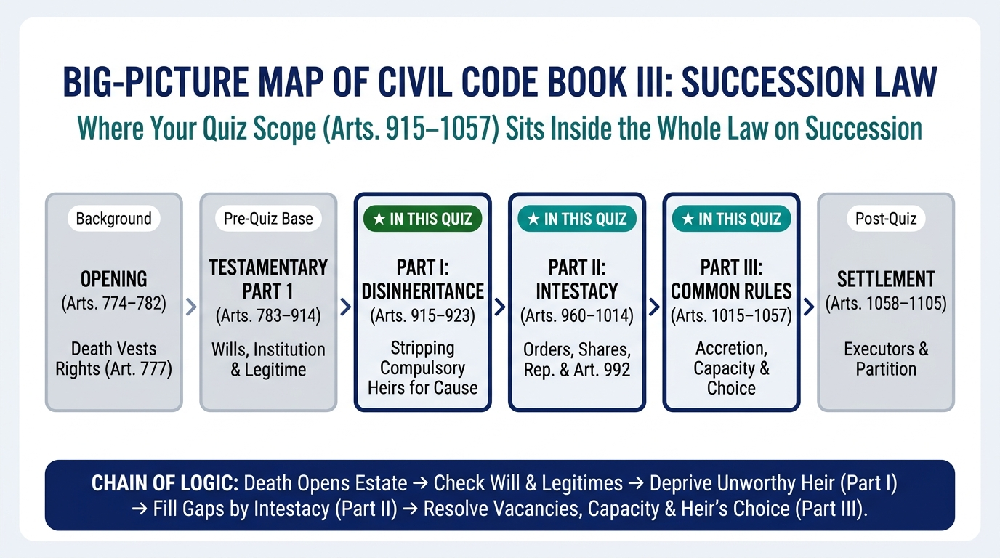
Figure 0A: Master Architecture of Civil Code Book III — Exact Statutory Position of Parts I–IV Inside Succession Law (Click image to enlarge)
Book III Chapter / Sequence
Civil Code Scope
Quiz Status
Structural Signpost (What Problem Does It Solve?)
Ch. 1: General Provisions
Arts. 774–782
Background Signpost
Establishes that succession opens and vests successional rights automatically at the moment of death (Art. 777).
Ch. 2 (Secs. 1–5): Wills, Institution & Legitimes
Arts. 783–914
Pre-Quiz Base Signpost
Governs will validity, preterition (Art. 854), substitutions (Art. 872), and how much legitime compulsory heirs must receive before free disposal.
Ch. 2 (Sec. 6): Disinheritance (PART I)
Arts. 915–923
TESTED
The sole legal mechanism empowering a testator to strip a compulsory heir of their legitime—and only upon strict statutory cause and form.
Ch. 2 (Sec. 7): Legacies & Devises (PART II)
Arts. 924–959
TESTED
Governs particular gifts carved out of the free portion: stranger-owned items (Art. 931), credits (Art. 936), Art. 950 vs. Art. 911 reduction, Art. 957 revocation & Art. 959 relatives.
Ch. 3: Legal / Intestate Succession (PART III)
Arts. 960–1014
TESTED
Default statutory distribution when no will exists, a will is void, or part of an estate goes undisposed (orders, shares, representation, and Art. 992).
Ch. 4 (Secs. 1–3): Common Provisions (PART IV)
Arts. 1015–1057
TESTED
Rules shared by testate and intestate succession: accretion for failed shares, capacity/unworthiness to inherit, and acceptance vs. repudiation.
Administrative wind-up after shares and heirs are settled: collation, estate administration, and physical partition.
PART I: THE LAW ON DISINHERITANCE (CIVIL CODE, ARTS. 915–923)
Part I Big-Picture Anchor (Title IV, Chapter 2, Section 6): Right after the Code locks in compulsory heirs' protected legitimes (prior section), Section 6 asks the narrow exception question: When, how, and for what grave misconduct may a testator deliberately take that legitime away?
I. Concept, Scope & 7 Essential Requisites (Arts. 915–917)
[Legitimes Protected (Arts. 886–914)] → [YOU ARE HERE: Sec. I — 7 Formal Gatekeepers (Arts. 915–917)] → [Specific Grounds (Arts. 919–921)]
STATUTORY ADDRESS Testamentary Succession — Disinheritance General Rules (Arts. 915–917). Applies only to compulsory heirs and exists only when there is a will.
CHAIN-OF-LOGIC BRIDGE Before looking at why a relative deserves exclusion (Arts. 919–921), the law sets 7 strict procedural gatekeepers (W-E-L-S-T-U-T) and places the burden of proving truth on the surviving heirs (Art. 917).
WHY THE LAW CARES Prevents testators from casually disowning family members out of momentary anger, secret malice, or vague boilerplate; even one missing gatekeeper triggers Art. 918.
[MEM] 7 Requisites Mnemonic — W-E-L-S-T-U-T: Valid Will • Express & Named • Lawful Cause • Stated in Will • True & Existing • Unconditional • Total (All of the legitime or none!).
Scope (Art. 915): Applies exclusively to compulsory heirs to strip their legitime for a statutory offense. Voluntary heirs (friends, strangers, collaterals) inherit solely from the free portion and cannot be "disinherited"—simply omit them or revoke their institution.
The 7 Mandatory Requisites (Arts. 915–917):
Valid Will: Must comply with formal requisites (Arts. 804–814) and be duly probated. Void if made via inter vivos deed, affidavit, or oral declaration.
Express & Specifically Identified Heir: Tacit omission in the direct line is preterition (Art. 854), not disinheritance.
Lawful Cause: Grounds in Arts. 919, 920, and 921 are exclusive (numerus clausus).
Expressly Stated in the Will: Must appear in the will's text for probate court review.
Certain & True (Existing at Execution): Offense must already exist when the will is executed—never future or speculative.
Unconditional: Deprivation of the legitime cannot depend on a suspensive or resolutory condition.
Total, Not Partial: Cannot forfeit merely 1/3 or 1/2 of the legitime; testator either forgives entirely or disinherits completely.
Conditional Disinheritance vs. Conditional Revocation & Burden of ProofArts. 915–917
General Rule
A conditional disinheritance is VOID (e.g., "I disinherit my daughter if she marries below our socioeconomic bracket"—void both as a non-statutory ground and a future contingent event). Additionally, under Art. 917, if the disinherited heir denies the cause, the burden of proof (onus probandi) rests on the OTHER HEIRS seeking to sustain it.
Valid Distinction
A conditional revocation (lifting) of disinheritance is VALID. Professor's Illustration:"I disinherit my daughter because she is currently living a dishonorable life [Art. 919(7)]; if she mends her ways, returns home, and serves me well, this disinheritance is lifted." The condition attaches to the pardon/revocation, not to the disinheritance itself.
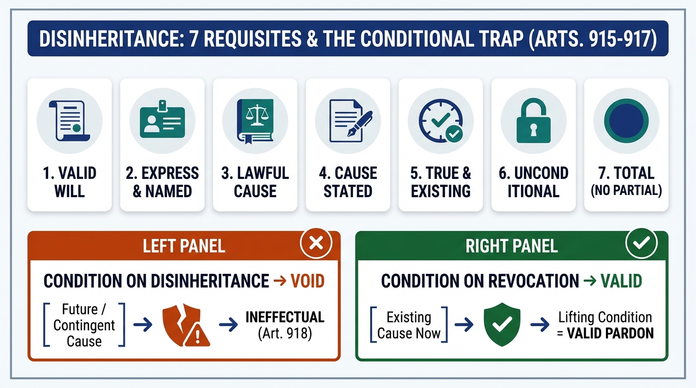
Figure 1: The 7 Requisites of Valid Disinheritance (WELSTUT) & Conditional Disinheritance vs. Conditional Revocation (Arts. 915–917) (Click image to enlarge)
Feature / Parameter
Valid Disinheritance (Arts. 915–917)
Defective / Imperfect Disinheritance (Art. 918)
Instrument & Cause
Valid, probated will; statutory cause expressly stated and true at execution.
Outside a will / denied probate; no cause stated; non-statutory, future, or unproven cause.
Extent & Condition
Total deprivation of legitime; unconditional (though revocation may be conditional).
Partial deprivation (e.g., 1/3 only) or conditional disinheritance itself.
Effect on Legitime
Compulsory heir completely deprived (subject to Art. 923 representation).
Institution annulled only insofar as it prejudices the heir's legitime; free portion stays valid.
II. Grounds for Disinheritance of Children & Descendants (Art. 919)
[7 Formal Requisites] → [YOU ARE HERE: Sec. II — Grounds vs. Descendants (Art. 919)] → [Grounds vs. Parents (Art. 920)]
STATUTORY ADDRESS Testamentary Succession — Exclusive Grounds Against Compulsory Children & Descendants (Art. 919[1–8]).
CHAIN-OF-LOGIC BRIDGE Now that you know the 7 formal hurdles (WELSTUT), this section gives the only 8 substantive offenses by a child or grandchild that satisfy the "Lawful Cause" requisite.
WHY THE LAW CARES Balances filial protection against grave child ingratitude (attempts on life, abandonment of duty to support, dishonor)—notice which grounds demand criminal conviction versus those requiring only civil proof.
[MEM] 8 Grounds Mnemonic — A-G-A-F-R-M-D-C:Attempt on life • Groundless accusation (≥6 yrs) • Adultery/concubinage w/ spouse • Fraud/violence on will • Refusal to support • Maltreatment (word/deed) • Dishonorable life • Civil interdiction.
Attempt Against Life (Art. 919[1]): Intentional felony (attempted, frustrated, or consummated under Art. 6, RPC) against the life of the testator, spouse, descendants, or ascendants, with final judgment of conviction.
Executive Clemency Trap: An absolute presidential pardon does NOT defeat disinheritance—it blots out penal liability to the State, not personal ingratitude.
No Prosecution / No Conviction Trap: Cannot use Art. 919(1) if family avoided scandal and filed no case; instead invoke Art. 919(6) (maltreatment by deed), which needs no conviction.
Groundless Accusation (Art. 919[2]): Filing complaint, acting as private complainant, or voluntarily testifying against testator for a crime carrying 6 years or more. Acquittal on reasonable doubt or technicality is NOT enough; acquittal must positively show the accusation was false, malicious, or fabricated.
Adultery or Concubinage with Testator's Spouse (Art. 919[3]): Requires final conviction (Arts. 333–334, RPC). Frequently applies to an illicit affair with a stepmother or stepfather.
Fraud, Violence, Intimidation, or Undue Influence on Will (Art. 919[4]): Causing testator to make or change a will (still valid ground even if coerced will was revoked and replaced).
Unjustifiable Refusal to Support (Art. 919[5]): Requires (a) actual need, (b) demand, (c) child's financial capacity (poverty justifies refusal), and (d) unjustified refusal.
Maltreatment by Word or Deed (Art. 919[6]):No criminal conviction required. Covers physical violence/unprosecuted attempt ("by deed") and grave oral defamation, cursing, or vicious social-media attacks ("by word").
Leading a Dishonorable or Disgraceful Life (Art. 919[7]):"Leads a life" requires continuity/habituality, not one isolated mistake; covers habitual crime, drug trafficking, or notorious scandal (not limited to sexual immorality).
Conviction Carrying Civil Interdiction (Art. 919[8]): Under Arts. 34 & 41, RPC, attaches to death (if not executed), reclusion perpetua, and reclusion temporal. Need NOT be committed against the testator—conviction for killing a total stranger qualifies.
III. Grounds for Disinheritance of Parents & Ascendants (Art. 920)
[Descendant Grounds (Art. 919)] → [YOU ARE HERE: Sec. III — Grounds vs. Parents/Ascendants (Art. 920)] → [Spouse Grounds (Art. 921)]
STATUTORY ADDRESS Testamentary Succession — Exclusive Grounds Against Parents & Ascendants (Art. 920[1–8]; reciprocal to Art. 919, minus maltreatment).
CHAIN-OF-LOGIC BRIDGE Reverses the mirror: when an adult child dies leaving no descendants, parents become compulsory heirs—this section asks what parental abuse lets the child disinherit them.
WHY THE LAW CARES Protects vulnerable children from abusive or negligent parents while guarding against subtle traps (omission of maltreatment, female-specific virtue clause, and Art. 920[8] vs. 920[2]).
Art. 920(1) SplitAbandonment of children (total deprivation of care, support, and guidance during minority) is gender-neutral (sons & daughters). Inducing daughters to live a corrupt/immoral life or attempting against their virtue (e.g., attempted rape, acts of lasciviousness; no conviction needed) is female-specific (daughters & granddaughters).
Art. 920(8) vs. 920(2)Attempt by One Parent Against the Other's Life: Under Art. 920(8) (no criminal conviction), parental reconciliation between Mother and Father extinguishes the child's right to disinherit. Conversely, if Father is convicted by final judgment of attempting to kill Mother (testator's ascendant), Art. 920(2) applies—Mother's forgiveness does NOT bar the child! Only reconciliation between Father and the child-testator (Art. 922) cures Art. 920(2).
Five Overlapping Grounds (Art. 920[2–5, 7]): Reciprocally mirror Art. 919(1–5) (Attempt on life w/ conviction; Groundless accusation ≥6 yrs; Adultery/concubinage w/ testator's spouse; Fraud/violence on will; Refusal to support).
Loss of Parental Authority (Art. 920[6]): Must arise from parental fault/culpability under the Family Code (not benign emancipation at age 18).
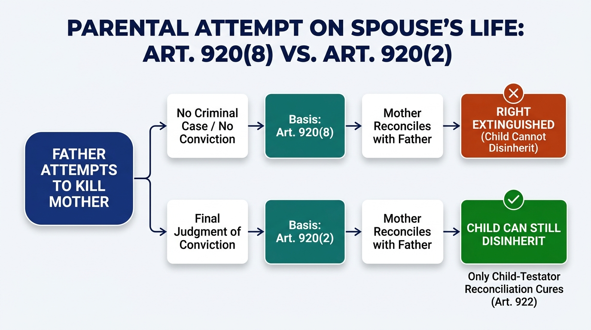
Figure 2: The Art. 920(8) vs. Art. 920(2) Trap — Effect of Parental Reconciliation With vs. Without Conviction (Click image to enlarge)
[Descendant/Parent Grounds (919–920)] → [YOU ARE HERE: Sec. IV — Spouse, Effects, Reconciliation & Defects (921–923, 918)] → [Part II: Legacies & Devises (Arts. 924–959)]
STATUTORY ADDRESS Testamentary Succession — Final Articles of Disinheritance (Arts. 921–923 & 918; cross-referencing Legal Separation under FC Arts. 55, 63[4]).
CHAIN-OF-LOGIC BRIDGE Completes the three compulsory classes by addressing the surviving spouse, then resolves the aftermath: Can forgiveness undo it? Do the guilty heir's children suffer? What if the testator botched the disinheritance?
WHY THE LAW CARES Prevents sins of the parent from punishing innocent grandchildren (Art. 923) and sharply distinguishes bungled disinheritance (partial preservation under Art. 918) from silent omission (total collapse into intestacy under Art. 854).
A. Six Grounds to Disinherit a Spouse (Art. 921) & Family Code Art. 55
[MEM] Mnemonic — A-G-F-L-P-R: (1) Attempt on life w/ conviction; (2) Groundless accusation ≥6 yrs; (3) Fraud/violence on will; (4) Legal separation cause given (Art. 921[4]); (5) Parental authority loss grounds; (6) Refusal to support children/spouse.
Incorporation of Legal Separation Grounds (Art. 921[4] & FC Art. 55): No final judicial decree is needed—"has given cause" suffices (if a final decree already issued, the guilty spouse is disqualified by law under FC Art. 63[4]). Incorporates all 10 grounds of FC Art. 55: (1) repeated physical violence/grossly abusive conduct; (2) pressure to change religion/politics; (3) attempt to corrupt/induce prostitution; (4) final sentence >6 yrs even if pardoned; (5) drug addiction/habitual alcoholism; (6) lesbianism/homosexuality; (7) subsequent bigamous marriage; (8) sexual infidelity/perversion (broader than criminal adultery/concubinage; no conviction needed); (9) attempt against testator's life (bypasses Art. 921[1]'s conviction requirement!); (10) unjustified abandonment >1 year.
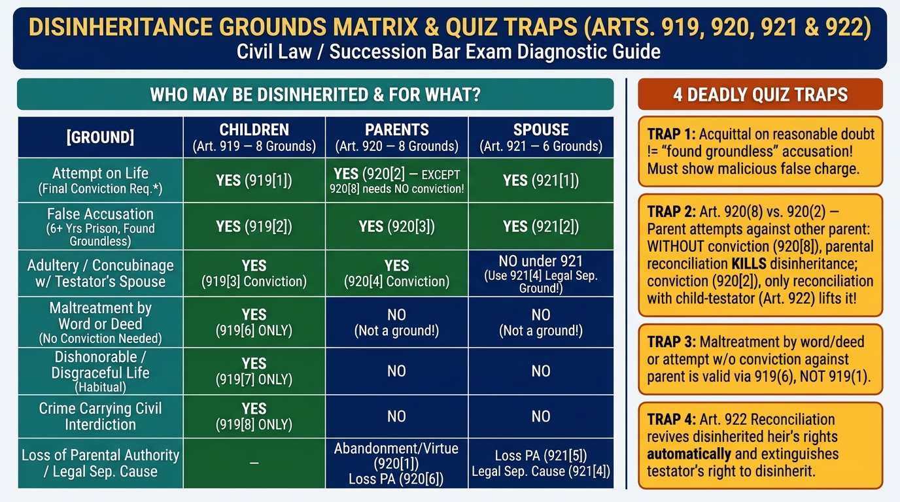
Figure 3: Grounds Comparison Matrix (Arts. 919 vs. 920 vs. 921) — Spot the Maltreatment Omission, Gender-Split & FC Art. 55(9) Bypass (Click image to enlarge)
Bilateral Reconciliation (Art. 922): Before will → bars disinheritance; after will → renders disinheritance ineffectual automatically without a new will. Requires (1) offer of forgiveness, (2) acceptance, and (3) actual restoration of former relations.
Professor's Illustration (Deathbed Pardon): A dying testator declares before witnesses, "I forgive everyone who wronged me, including my disinherited children," and dies hours later without the disinherited son accepting or resuming relations. Result: Disinheritance remains VALID—unilateral general forgiveness is not bilateral reconciliation.
Representation (Art. 923): Children/descendants of the disinherited heir take his place strictly as to the legitime (plus intestate share of any undisposed free portion). Disinherited parent has NO usufruct or administration over that property.
Imperfect Disinheritance (Art. 918) vs. Preterition (Art. 854):
Imperfect Disinheritance (Art. 918): Annuls the institution only insofar as it prejudices the heir's legitime; institution over the free portion stays valid.
Preterition (Art. 854): Complete omission of a direct-line compulsory heir annuls the institution totally (triggering intestacy unless legacies/devises exist).
PART I DECISION ARCHITECTURE
Exclusion Outcomes: Preterition (Art. 854) vs. Imperfect (Art. 918) vs. Valid Disinheritance (Arts. 922–923)
Path 1: Silent Total Omission (Preterition — Art. 854)
Trigger: Direct-line compulsory heir is omitted without being named or given any property.
Result:Totally annuls the institution of heirs → Estate passes into intestacy (save valid non-inofficious legacies).
Path 2: Named, Fails W-E-L-S-T-U-T or Proof (Art. 918)
Trigger: Heir is named, but lacks cause, states non-statutory ground, is conditional/partial, or heirs fail Art. 917 proof.
Result:Ineffectual by law once former relations are bilaterally restored (no new will needed).
Trap: Unilateral deathbed pardon without bilateral restoration fails!
₱120M Estate Model (4 LCs: A, B, C, D)
Operative Analysis
Final Distribution
1. Invalid Disinheritance + Preterition "Disinherit D; all to A & B" (C omitted)
D void (Art. 918); C omitted = preterition (Art. 854) → total annulment → Intestacy.
A=₱30M, B=₱30M, C=₱30M, D=₱30M
2. Invalid Disinheritance Only "Disinherit D; all to A, B, C"
All 4 named (no preterition). Art. 918 gives D strict legitime (₱15M); ₱60M FP stays with A, B, C (₱20M each).
A=₱35M, B=₱35M, C=₱35M, D=₱15M
3A. Valid Disinheritance (D Childless)
D stripped; A, B, C split entire ₱120M equally.
A=₱40M, B=₱40M, C=₱40M, D=₱0
3B. Valid Disinheritance (D has D1, D2)
Art. 923: D1 & D2 represent D only in ₱15M legitime (₱7.5M each); A, B, C split remaining ₱105M.
A=₱35M, B=₱35M, C=₱35M, D1=₱7.5M, D2=₱7.5M
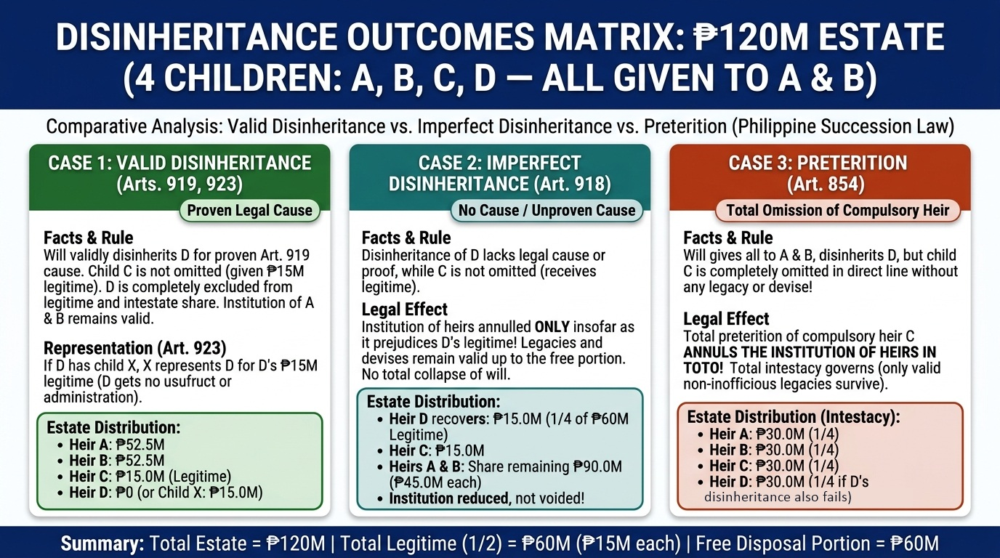
Figure 4: Part I Summary Matrix — How Preterition (Art. 854), Imperfect Disinheritance (Art. 918), and Valid Representation (Art. 923) Alter the ₱120M Estate (Click image to enlarge)
PART II: THE LAW ON LEGACIES AND DEVISES (CIVIL CODE, ARTS. 924–959)
Part II Big-Picture Anchor (Title IV, Chapter 2, Section 7 — Arts. 924–959): Completing Testamentary Succession right after Disinheritance (Section 6): instead of instituting heirs to fractional aliquots of the whole estate, Section 7 governs particular gifts of determinate objects, money, or individualized rights payable strictly out of the free portion.
V. General Concepts, Burdens, Solidary Liability & Eviction (Arts. 924–928)
[Part I: Disinheritance (Arts. 915–923)] → [YOU ARE HERE: Sec. V — Particular Gifts, Burdens & Warranties (Arts. 924–928)] → [Ownership Rules (Arts. 929–933)]
STATUTORY ADDRESS Testamentary Succession — Legacies & Devises General Framework (Arts. 924–928, 782, 854, 1087; NIRC Sec. 94; Rule 88).
CHAIN-OF-LOGIC BRIDGE Once Disinheritance secures compulsory legitimes, Section 7 governs particular gifts carved out of the free portion: what things may be given, who must pay them, and what liability attaches upon loss or eviction.
WHY THE LAW CARES Shields compulsory legitimes from sub-legacy overcharging while holding co-heirs in possession solidarily accountable for negligent destruction (Art. 927).
Legacy vs. Devise (Art. 924):Legacy = gift of personal property (corporeal/incorporeal); Devise = gift of real property (immovable). Both confer an economic benefit other than a fractional aliquot share (Manresa; J.B.L. Reyes), chargeable exclusively to the free portion (never impairing the legitime).
Subject Matter ("Within the Commerce of Man"): Must exist (present or determinate future thing like expected harvest), be lawful, and be susceptible of private appropriation (void: human organs, public plazas, prohibited narcotics). Testator may also bequeath a mere right (credit, usufruct, easement, remission of debt).
Four Statutory Purposes (Paras citing 6 Manresa 652): Rewards for past services (remuneratory), gratitude, charity/piety, and individual personal preferences.
Tax & Premature Distribution Check — Vera v. Navarro, 79 SCRA 408, G.R. No. L-27745 (Oct. 18, 1977):(Citation Note: cited in Paras as 79 SCRA 608; official report is 79 SCRA 408.) Heirs/beneficiaries are not solidarily liable for succession taxes; each answers individually up to benefits received. A probate court cannot order premature distribution prior to tax clearance/bond (modern NIRC TRAIN Law imposes a single 6% estate tax + BIR eCAR bar under Sec. 94).
Parameter
Instituted Heir (Art. 782)
Legatee / Devisee (Art. 924)
Object Received
Whole estate or aliquot fractional share (1/2, 1/3).
Specific, determinate object, cash sum, or individualized right.
Source of Right
Testate (by will) OR Intestate (by law).
Exists ONLY in testamentary succession (never by intestacy).
Effect of Preterition (Art. 854)
Institution of heirs annulled in toto.
Respected & preserved, insofar as not inofficious.
Liability for Estate Debts
Liable up to inheritance value received.
Not personally liable unless sub-charged or estate is insolvent (Art. 925 / Rule 88).
Classifications (Paras):Legacy Proper (charge on estate; no specific heir named) vs. Sub-Legacy / Sub-Devise (burden imposed personally on an heir/legatee, e.g., "car to X, provided X pays Y ₱500") vs. Pre-Legacy (testamentary gift granted to a co-heir in addition to his hereditary share).
Jurado's Procedural Nuance: Because wills under probate are administered by an executor/administrator, Art. 926(2) (making heirs personally liable in proportion to shares) operates in practice only when there is no judicial administration.
Sub-Legacy Liability Ceilings (Art. 925[2]): (1) A compulsory heir burdened with a sub-legacy pays ONLY up to his free-portion excess (legitime is untouchable—Jurado Example: ₱10k legitime + ₱5k FP charged w/ ₱10k gift → pays ₱5k max); (2) a legatee/devisee pays ONLY up to the value of the gift received (₱100k piano charged w/ ₱150k gift → ₱100k max).
Proportionate Contribution Ratio (Paras' ₱1,000,000 Computation): Legitimate children A & B instituted 3/5 (₱600k = ₱250k legitime + ₱350k FP) and 2/5 (₱400k = ₱250k legitime + ₱150k FP), charged with a ₱50,000 legacy to F. Contribution ratio tracks free-portion shares (350:150 = 7:3), NOT 3:2! → A pays ₱35,000 (7/10); B pays ₱15,000 (3/10).
Solidary Liability for Loss (Art. 927): Two or more co-heirs who take possession of estate property are solidarily liable to the legatee/devisee for loss or destruction due to fault/negligence of any one of them (external solidary liability; internally under Art. 1087, the innocent paying co-heir recovers full reimbursement from the negligent co-heir — Debuque v. Climaco, 99 SCRA 353 [1980]).
Warranty Against Eviction & Hidden Defects (Art. 928):
Generic / Indeterminate Bequest: Obligor (estate or burdened heir) IS liable for eviction AND impliedly for hidden defects/encumbrances (Paras, Manresa, Valverde, since Art. 941 mandates medium quality).
Specific / Determinate Bequest:NO warranty against eviction (testator intended to give only whatever right he possessed).
Paras' Court-Approval Qualification: If delivered pursuant to a court order in judicial administration proceedings, there is NO warranty against eviction by the estate/administrator even if generic.
[Burdens & Warranties (924–928)] → [YOU ARE HERE: Sec. VI — Ownership Matrix & Credits/Mortgages (929–939)] → [Generic vs. Specific & Reduction (940–950)]
STATUTORY ADDRESS Particular Bequests — Property Owned Partly/Wholly by Strangers or Beneficiaries (Arts. 929–933); Mortgages, Credits & Mistaken Debts (Arts. 934–939; Arts. 1423–1430, 2154; R.A. 11057; Rule 86 Sec. 7).
CHAIN-OF-LOGIC BRIDGE Resolves what happens when a testator tries to give away something not wholly theirs (co-owned, stranger-owned, already beneficiary-owned) or burdened by a mortgage, pledge, or debt.
WHY THE LAW CARES Prevents unintended gifts of strangers' assets through mistaken belief of ownership (Art. 930) while protecting creditor-legatees' bonus presumption (Art. 938).
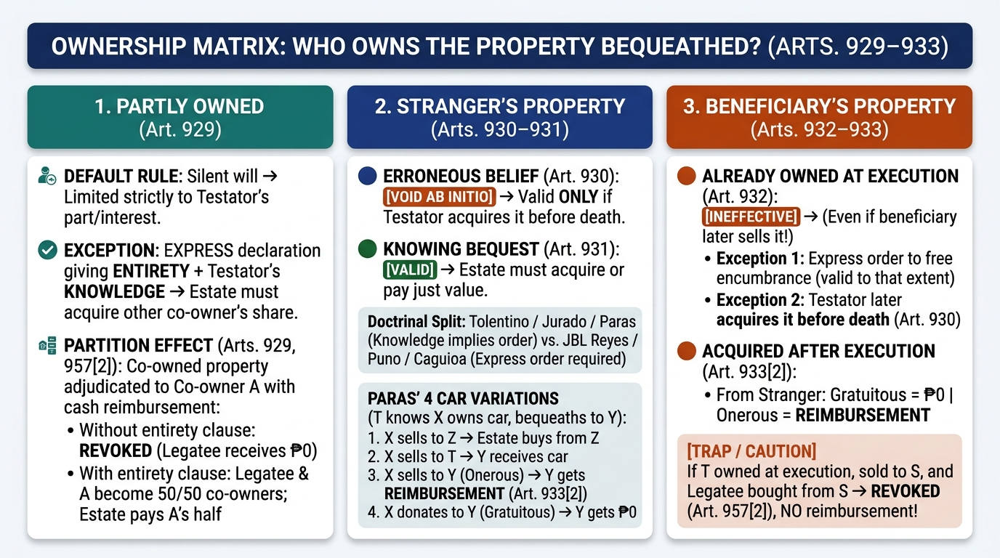
Figure 5: Bequest Ownership Matrix (Arts. 929–933) — Testator Mistake vs. Knowledge of Stranger Ownership, Plus Paras' 4 Classic Car Variations (Click image to enlarge)
A. Property Ownership Matrix (Arts. 929–933)
Article
Ownership Scenario & Sub-Rule
Operative Legal Effect & Author Split
Art. 929 (Partly Owned)
General Rule: Testator co-owns asset. Exception: Express declaration giving the entirety(express order to acquire unnecessary — Paras).
Confined to testator's share/interest. If entirety expressly declared, estate keeps testator's part + buys co-owner's share (or pays just value under Art. 931). If partitioned to co-owner w/ cash reimbursement before death: revoked (Art. 957[2]) unless entirety expressly declared (survives as to co-owner's original half; Jurado & Paras).
Arts. 930–931 (Legado de Cosa Ajena)
1. Erroneous Belief:VOID ab initio (6 Manresa 665), UNLESS testator later acquires it. 2. Known Belonging to Stranger: Estate must acquire & deliver, or if owner refuses/demands excessive price (Jurado: ₱100k for ₱20k car), pay just value (justo precio).
Strict / Express-Order (J.B.L. Reyes, Puno, Caguioa) Mere knowledge insufficient; will must expressly order acquisition, else void. Prevailing / Implied-Order (Tolentino, Jurado, Paras) Knowledge carries an implied order to acquire; requiring express order contradicts Art. 930. Suppression of Old Art. 863 (Tolentino): If thing belongs to burdened heir himself, testator's knowledge is immaterial because heir accepts cum onere.
Arts. 932–933 (Already Beneficiary's)
At Execution: Already owned by legatee. Exc. 1: Stranger-owned at will, later acquired by beneficiary. Exc. 2 (Jurado): Testator acquires it from beneficiary before death.
Art. 932(1): Completely INEFFECTIVE (even if later alienated). Art. 933(2) Later Acquisition by Beneficiary: Acquired Gratuitously → ₱0 (extinguished); Acquired Onerously → Estate REIMBURSES price paid(unless testator sold first to S and L bought from S: L gets ₱0 because Art. 957[2] already revoked legacy! — Paras).
[MEM] Paras' 4 Classic Car Variations (T writes "I give X's car to Y", knowing X owns it):
1. X sells to Z, then T dies:Y inherits (estate buys from Z or pays justo precio). •
2. X sells to T himself:Y inherits (T owns at death). •
3. X sells to Y himself (onerous):Y gets reimbursement (Art. 933[2]). •
4. X donates to Y (gratuitous):Y gets ₱0 (double enrichment barred, Art. 933[2]). Naked Ownership Bequeathed (Paras): If T owns naked ownership and U holds usufruct, and T leaves naked ownership to D, full ownership consolidates in D upon U's subsequent death.
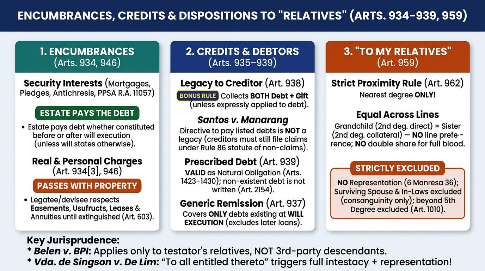
Figure 6: Secured Debts (Art. 934), Remission vs. Demand Letter Trap (Arts. 935–939) & "To My Relatives" Strict Proximity (Art. 959) (Click image to enlarge)
Pledges, Mortgages, Antichresis & R.A. 11057 (Personal Property Security Act) Security Interests (created before or after will): Estate MUST pay the secured debt so beneficiary receives unencumbered title (unless contrary intent in will OR security was for a non-recoverable obligation like a fidelity bond — 6 Manresa 683). Under Rule 86, Sec. 7, mortgagee has 3 remedies: waive security & file claim; foreclose & claim deficiency; or rely solely on mortgage (10-yr action, waiving deficiency).
Perpetual / Temporary Charges:Easements, usufructs, registered / over-1-yr leases, annuitiesPASS WITH THE PROPERTY—the estate does NOT clear them!
Legacy of Credit & Remission (Arts. 935–937):
Credit vs. Third Party: Estate assigns all rights of action & accessory securities; NO warranty of debtor's solvency or existence of credit.
Remission of Debt: Estate issues release/acquittance (subject to reduction if inofficious). Generic remission (Art. 937) covers ONLY debts existing at will execution, NOT subsequent loans!
Suit Kills Credit Trap (Art. 936): Both credit and remission are revoked ONLY if testator files a JUDICIAL SUIT against the debtor (Jurado & Paras: a lawyer's extrajudicial demand letter does NOT revoke!). Par. 2: Returning/bequeathing a pledged item extinguishes only the pledge/security interest (incl. mortgage/antichresis per Paras)—the principal debt stays collectible!
Legacy to Creditor (Art. 938) & Mistaken Debts (Art. 939):
Art. 938 Presumption of Liberality: Legacy to a creditor is a BONUS (creditor gets BOTH debt and gift) unless expressly applied to payment (dacion en pago if accepted unconditionally).
Santos v. Manarang, 27 Phil. 209 (1914): Testator's clause listing/directing payment of debts is NOT a legacy; creditors must still file claims within probate's statute of non-claims (Rule 86) or be barred.
Art. 939 Mistaken Debts: Ordering payment of a non-existent debt is void (considered not written; recovery via Art. 2154solutio indebiti); excess sum not due unless intended as liberality. Exception: Ordering payment of a prescribed debt is VALID as a natural obligation (Arts. 1423–1430).
VII. Generic vs. Specific Gifts, Vesting & the Art. 911 vs. Art. 950 Battle (Arts. 940–950)
[Ownership & Credits (929–939)] → [YOU ARE HERE: Sec. VII — Generic Risk, Vesting & Reduction Battle (940–950)] → [Delivery, Revocation & Relatives (951–959)]
STATUTORY ADDRESS Alternative/Generic/Support/Pension/Usufruct Bequests, Vesting/Fruits/Risks, and Payment Order (Arts. 940–950, 911, 1199–1205, 866; Rule 88).
CHAIN-OF-LOGIC BRIDGE Once a gift passes ownership validity, determine when title vests, who collects rent before vs. after death, who suffers earthquakes, and who gets cut when the free portion runs dry.
WHY THE LAW CARES Separates fungible movables from individualized real estate (Art. 941) and draws the bright-line trigger between compulsory-heir protection (Art. 911pro rata) and legatee hierarchy (Art. 950R-P-S-E-S-A).
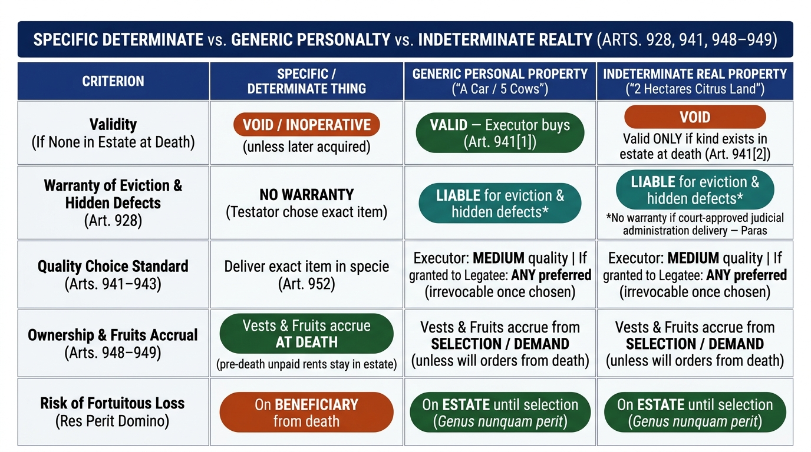
Figure 7: Specific vs. Generic Movable vs. Indeterminate Real Property — Validity in Estate, Eviction Warranty, Ownership & Loss Risk (Click image to enlarge)
A. Alternative & Generic Bequests, Quality & Choice (Arts. 940–943, 1199–1205)
Alternative Bequests (Art. 940): Right of choice belongs to the burdened heir / executor unless expressly granted to the legatee/devisee (Art. 1200). Once communicated (Art. 1201), choice is irrevocable (even if exercised in a will — Paras) and converts into a simple obligation; Arts. 1199–1205 govern impossibility.
Quality Standard (Art. 941–942): Unless choice is expressly granted to the beneficiary (Art. 942 — can pick any quality), the executor delivers medium quality (neither inferior nor superior).
Feature
Specific Determinate (Arts. 948, 928)
Generic Personal (Arts. 941[1], 949)
Indeterminate Real (Art. 941[2])
If None Exists in Estate
Void / Inoperative (unless acquired before death)
VALID (Estate buys medium quality w/ cash)
VOID / INOPERATIVE unless realty of that kind exists in estate!
Eviction / Hidden Defects (Art. 928)
NO warranty
LIABLE(unless court-ordered delivery — Paras)
LIABLE(unless court-ordered delivery — Paras)
Ownership Transfer
Immediately at Death (Arts. 948, 777)
Upon selection / choice
Upon selection / choice
Fruits & Interests
From Death (uncollected pre-death rent → estate!)
From selection/demand, unless ordered from death
From selection, unless ordered from death
Fortuitous Loss Risk
On Beneficiary from death (res perit domino)
On Estate (genus nunquam perit)
On Estate until selection
B. Specialized Gifts, Vesting, Ownership & Fruits (Arts. 944–949)
Support & Education (Art. 944): Support lasts for life (even past majority); Education ends at age of majority OR completion of profession/trade (whichever occurs LATER!). Measured by testator's custom/estate means; intransmissible (intuitu personae) upon legatee's death unless expressly provided.
Periodical Pension (Art. 945): Demandable from death; beneficiary demands installment at the start of each period without refund obligation if legatee dies mid-period (actual payout awaits Rule 90 debt settlement/bond, with arrears accruing — Paras).
Usufruct (Art. 946) & Vesting Rules (Arts. 947–949): Pure gifts vest at death and transmit to beneficiary's heirs; suspensive conditions grant only an intransmissible expectancy until fulfilled (Art. 866). Pre-death overdue rents remain with estate; growing / post-death natural or industrial fruits go to specific devisee without charging production costs (6 Manresa 731).
Cash Interest & Probate Cases: Money legacies earn interest ONLY from formal judicial/extrajudicial demand absent express testamentary grant (Fuentes v. Canon, 6 Phil. 117 [1906]; Chiong Joc-Soy v. Vaño, 8 Phil. 119 [1907]). Good-faith withdrawn probate opposition does not forfeit a devise, and devisee keeps post-death fruits (Santos v. Buenaventura, 18 SCRA 47 [1966]). (Persuasive foreign citation: Lake v. Harrington, 120 Miss. 74 [1953] on ademption.)
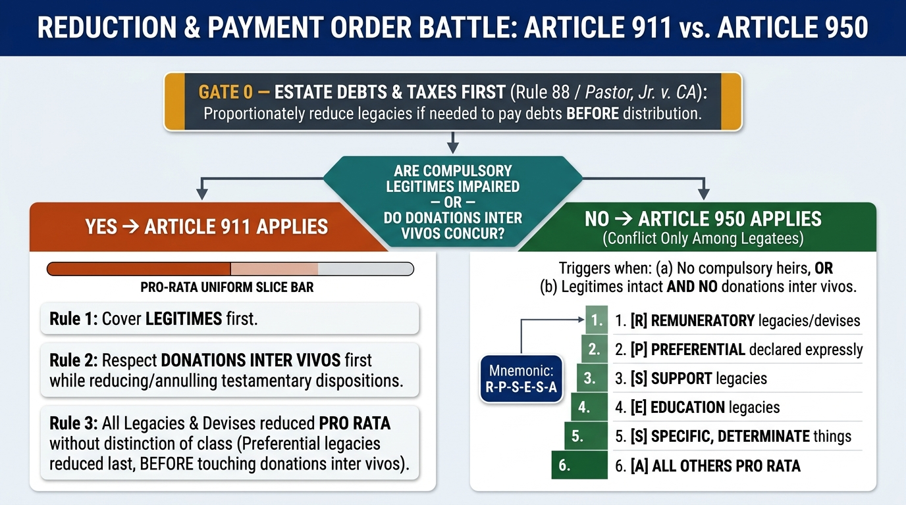
Figure 8: The Crucial Exam Switch — Art. 911 (Pro Rata When Legitimes / Donations Involved) vs. Art. 950 (R-P-S-E-S-A Waterfall) (Click image to enlarge)
C. The Reduction Battle: Art. 911 vs. Art. 950 (R-P-S-E-S-A)
Gatekeeper Rule: When Does Art. 911 Override Art. 950?Arts. 911 vs. 950 & Rule 88
ARTICLE 911 Triggered
Whenever compulsory legitimes are impaired OR collated donations inter vivos exist → All legacies/devises are reduced PRO RATA without class distinction (except preferential gifts are cut last before reducing donations inter vivos).
ARTICLE 950 (R-P-S-E-S-A)
When legitimes are INTACT (or no compulsory heirs) AND NO donations inter vivos exist → Pay strictly top-to-bottom until cash runs out: (1) Remuneratory → (2) Preferential → (3) Support → (4) Education → (5) Specific determinate thing in estate → (6) All others pro rata. Statutory Update (Paras): Estate debts always reduce legacies first per Rule 88, Secs. 1–3 & 6(superseding Act No. 190, Sec. 729).
R-P-S-E-S-A: R(10k)+P(10k)+S(15k)+E(15k) paid in full (₱50k); remaining ₱10k split pro rata 3:1 → X=₱7,500; Y=₱2,500.
2. Jurado #2 (2 LCs; Legitime Intact)
Net ₱40k; 2 LCs take ₱20k legitime; FP = ₱20k (no donations). Gifts: R=₱5k, S=₱10k, E=₱15k, X=₱10k.
Art. 950 governs (no legitime impairment or donations): R=₱5k; S=₱10k; E=₱5k; X=₱0.
3. Paras #3 (Debts First + Art. 950)
Gross ₱410k − Debts ₱50k = Net ₱360k (no CHs). Gifts: Support=₱200k, Education=₱200k, Specific Piano=₱100k (2:2:1).
Step 1 (Rule 88 debts pro rata): S=180k, E=180k, Piano=90k. Step 2 (Art. 950 on ₱360k net): S=₱180k; E=₱180k; Specific Piano=₱0.
VIII. Delivery, Election, Merging, Revocation by Law & Relatives (Arts. 951–959)
[Generic, Risk & Art. 950 (940–950)] → [YOU ARE HERE: Sec. VIII — Delivery, Merging, Revocation & Relatives (951–959)] → [Part III: Intestacy (Arts. 960–1014)]
STATUTORY ADDRESS Final Rules of Legacies & Devises (Arts. 951–959, 830[1], 892, 960[2], 962, 1010, 1015, 1055).
CHAIN-OF-LOGIC BRIDGE Bridges straight into Intestacy & Common Rules: failed gifts merge via Art. 956 (ISRAI), onerous/gratuitous elections mirror Art. 1055, and general "relatives" clauses pit Art. 959 against intestate representation.
WHY THE LAW CARES Stops self-help seizure of probate assets (Art. 953), saves gifts from vitiated-consent transfers (Dimagiba), and catches classic widow/nephew exclusions under Art. 959.
A. Delivery, No Self-Help (Arts. 951–953), Election (954–955) & Merging (Art. 956)
Condition & Zero Self-Help (Arts. 951–953): Deliver thing with all accessories/accessions (Art. 1166) in the condition at testator's death; cash legacies must be paid in money even if estate has zero cash. No self-possession (Art. 953): must demand delivery from executor/administrator after debt/tax liquidation (Pastor, Jr. v. CA, 122 SCRA 885 [1983]; Benedicto v. Javellana, 10 Phil. 197 [1908]). Assets donated inter vivos leave the estate (Cembrano v. Pardo de Tavera, 68 Phil. 175). Legacies from specified sale proceeds don't fail disproportionately absent contrary intent (Testate Estate of Isidro Aragon, G.R. No. L-2920 [1951]).
Partial/Onerous Election (Arts. 954–955) & Cross-Bridge to Art. 1055:
Single Gift Partly Onerous (Art. 954[1]):All or nothing (cannot take free part and reject charge). Wholly Gratuitous: May accept/repudiate a portion; Art. 954(2) transmits election right to heir's own heirs independently.
Two Separate Gifts (Art. 955[1]): If ONE is onerous, beneficiary CANNOT accept the gratuitous and reject the onerous(if BOTH onerous or BOTH gratuitous, may accept one and reject the other unless tied by testator).
Compulsory Heir + Legatee (Art. 955[2] vs. Art. 1055): A compulsory heir MAY accept legitime and renounce free-portion legacy, or vice versa (Art. 955[2])—contrast Art. 1055, where repudiating testamentary heirship forfeits intestate heirship too!
Merging Into Estate Mass (Art. 956) & ISRAI: When a beneficiary fails to take and there is NO substitute and NO accretion (Art. 1015), the gift merges into the estate mass (Art. 960[2]). Order (Paras): Institution → Substitution → Representation (zero for voluntary legacies!) → Accretion → Intestacy. In Parish Priest of Victoria v. Rigor, 89 SCRA 493 (1979), a devise conditioned on a male relative already studying for the priesthood at death failed and merged into the estate mass via Art. 956.
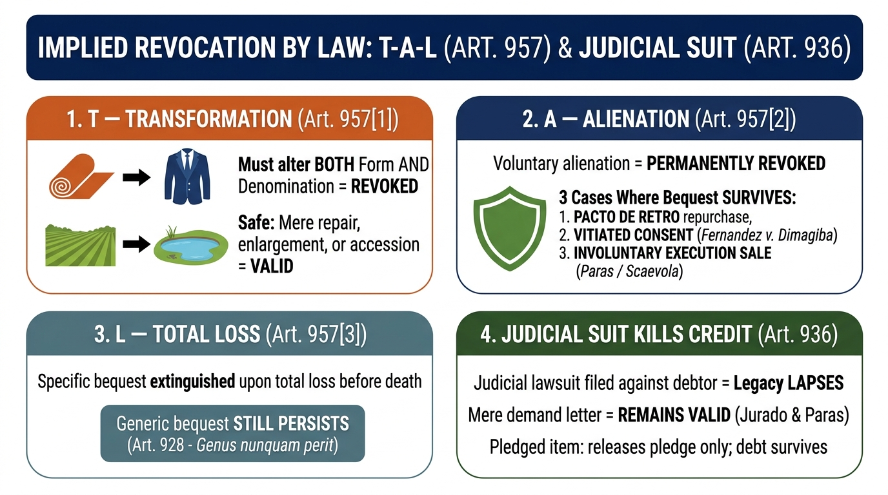
Figure 9: T-A-L Implied Revocation (Art. 957), the Three Alienation Exceptions (Pacto de Retro / Dimagiba / Involuntary Sale) & Art. 936 Suit Rule (Click image to enlarge)
Art. 957 (T-A-L Revocation by Law under Art. 830[1]; Jurado adds Art. 936 suit as 4th mode):
Transformation (Par. 1): Changes BOTH form AND denomination (cloth → suit; riceland → fishpond; swimming pool → tennis court). Repair/enlargement does NOT revoke (Jurado).
Alienation (Par. 2): Voluntary transfer revokes permanently to extent alienated—even if sale contract is null and testator reacquires it—EXCEPT THREE SURVIVING CASES: (a) reacquisition via right of repurchase (pacto de retro); (b) alienation annulled due to vitiated consent (Fernandez v. Dimagiba, 21 SCRA 428 [1967] — lacked animus revocandi); (c) involuntary execution sale reacquired by testator (Paras / 15 Scaevola 260: preserves gift; Source 3 Note: treats permanent loss under Par. 3).
Total Loss (Par. 3): Fortuitous loss before/after death extinguishes specific gift; generic gifts survive.
Art. 958 (Mistaken Name/Description):Falsa demonstratio non nocet—wrong street number ("No. 957" vs. "No. 759 Dian St.") is harmless if object is clearly identifiable.
Art. 959 (Dispositions Generally to "My Relatives"): Restricted strictly to consanguinity within 5th degree (Art. 1010) of testator himself (excludes spouse & affines). Strict proximity (Art. 962) applies WITHOUT representation, line preference (2nd-deg grandchild & 2nd-deg sister share equally — 6 Manresa 36), or 2:1 full/half blood distinction (Jurado ₱60k example: Widow B gets ₱30k legitime only; brothers C & D split ₱30k FP = ₱15k each; nephews E & F = ₱0).
Jurisprudence Traps:Belen v. BPI, 109 Phil. 1008 (1960) (Art. 959 does NOT cover "descendants" of a third-party legatee—children & grandchildren concur per capita); Vda. de Singson v. De Lim, 74 Phil. 109 (1943) (not 47 Phil.) (bequest "to all who are entitled thereto" invokes intestate representation!).
Cross-Topic Quiz Bridges (How Part II Feeds Parts III & IV):1. Mixed Succession (Art. 960[2]): Never deduct a legacy off the top of the gross estate—deduct solely from the heir whose intestate share exceeds legitime (see Fig. 11!). •
2. Vacancies (ISRAI): Lapsed Part II bequests follow Art. 956 → Art. 1015 accretion → Art. 960(2) intestacy. •
3. Dual Election (Art. 955[2] vs. Art. 1055): Compulsory heir may waive FP legacy and take legitime (Art. 955[2]), unlike repudiating testamentary heirship (Art. 1055).
C. Five Inline Worked ALAC Problems (Arts. 924–959)
Generic Devise vs. Generic Legacy (Art. 941):Facts: T left "five dairy cows" to A and "two hectares of citrus land" to B; estate held only cash & stocks at death. Answer:A gets 5 cows; B gets ₱0 (generic movables valid even if absent; indeterminate realty void unless kind exists in estate at death).
Involuntary Alienation & Repurchase (Art. 957[2]):Facts: Sheriff sold devised building on execution to X; T bought it back from X before dying. Answer:B gets the building (Paras/Scaevola view: involuntary judicial sale lacks voluntary animus revocandi).
Onerous vs. Gratuitous Election (Art. 955[1]):Facts: T left B a resort charged with paying ₱100k/yr to an orphanage and an unburdened sports car; B accepts car and rejects resort. Answer:INVALID under Art. 955(1) (must take both or renounce both).
Conditional Devise & Merging (Art. 956 / Rigor):Facts: Commercial lot devised to grandniece G "provided G graduates as a doctor"; G predeceased T in 2nd-yr college leaving son S. Answer:Legal heirs via intestacy; S gets ₱0 (suspensive condition failed per Art. 866; zero representation in voluntary gifts; merges per Art. 956).
Reduction Priority (Art. 950R-P-S-E-S-A):Facts: No compulsory heirs, no donations inter vivos, Net ₱300k; gifts: ₱100k Nurse N (remuneratory), ₱100k Cousin C (support), ₱100k Nephew E (education), ₱100k Friend F. Answer:N=₱100k, C=₱100k, E=₱100k, F=₱0 (Art. 950R-P-S-E-S-A exhausts ₱300k at tier 4).
PART III: INTESTATE SUCCESSION, SHARES, REPRESENTATION & ART. 992
Part III Big-Picture Anchor (Title IV, Chapter 3 — Arts. 960–1014): We now step outside wills completely (and receive lapsed Part II bequests via Art. 956). Whenever there is no valid will, an heir fails without a substitute/accretion, or property remains undisposed, the law supplies its own "statutory will" modeled on presumed family affection.
IX. Causes, Lines, Proximity & Orders of Intestacy (Arts. 960–962, 978–1014)
[Part II: Legacies & Devises (924–959)] → [YOU ARE HERE: Sec. IX — Intestate Triggers & Priority Hierarchy (Arts. 960–1014)] → [Intestate Shares (Arts. 983–1001)]
STATUTORY ADDRESS Legal or Intestate Succession — Triggers (Art. 960), Lines/Proximity (Art. 962), and Regular vs. Irregular Orders (Arts. 978–1014).
CHAIN-OF-LOGIC BRIDGE Before dividing any peso by fractions, you must first determine WHO stands in line at all—who excludes whom by line, order, and degree—and whether the decedent himself was legitimate or illegitimate.
WHY THE LAW CARES Enforces presumed family affection (descending > ascending > collateral up to the 5th degree > State) so property never becomes ownerless (bona vacantia) and closer bloodlines aren't hijacked by distant cousins.
Causes of Intestacy (Art. 960 + Doctrinal Grounds): (1) No will, void will, or revoked will (Art. 830); (2) Will omits universal heir / partial disposition → Mixed Succession (Art. 960[2]); (3) Suspensive condition fails; (4) Predecease, incapacity, or repudiation without substitute/accretion; (5) Resolutory condition fulfilled (Art. 871) or resolutory term expires (Art. 885).
Absence of Free Portion in Pure Intestacy: The entire net estate is exhausted by intestate shares; the State (Arts. 1011–1014) is the ultimate default heir (humorous aside: our "kabalikat sa kaunlaran").
Preference of Lines & Subordination of Proximity (Art. 962):Direct Descending > Direct Ascending > Collateral.
[MEM] Order Beats Proximity Trap: Under Art. 962, proximity of degree yields to the Order of Intestate Succession. Professor's Illustration: Uncle E (3rd degree) and Nephews C & D (3rd degree) both stand 3 degrees from X, yet Nephews C & D (Rank 5) completely exclude Uncle E (Rank 6).
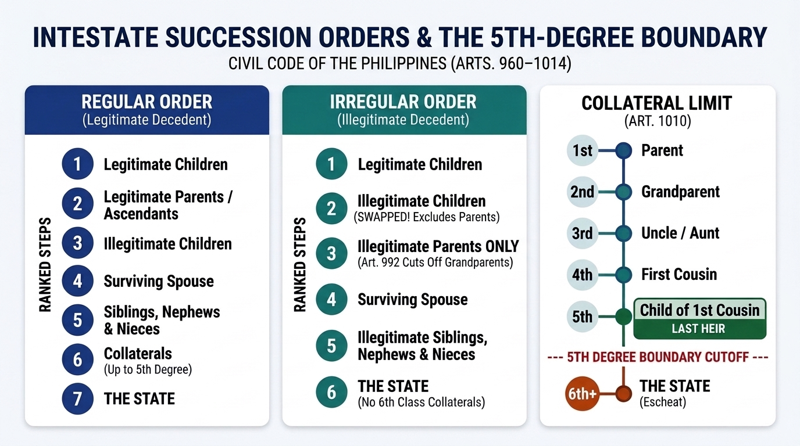
Figure 10: Regular vs. Irregular Intestate Order & The 5th-Degree Collateral Boundary (Arts. 978–1014) (Click image to enlarge)
Rank
Regular Order (Legitimate Decedent)
Irregular Order (Illegitimate Decedent)
Concurrence & Cutoff Rules
1st
Legitimate Children & Descendants (Art. 979)
Legitimate Children & Descendants (Art. 979)
Concurs with ICs & Spouse; excludes Parents/Ascendants.
2nd
Legitimate Parents & Ascendants (Art. 985)
Illegitimate Children & Descendants (Art. 988)
Ranks 2 & 3 SWAP! In Irregular Order, any IC excludes illegitimate parents (Art. 993).
3rd
Illegitimate Children & Descendants (Art. 988)
Illegitimate Parents ONLY (Art. 993)
Illegitimate decedent's ascending line stops at parents (no grandparents via Art. 992).
4th
Surviving Spouse (Art. 995)
Surviving Spouse (Art. 994)
Concurs with LCs, Ascendants, ICs, or Siblings/Nephews/Nieces.
CHAIN-OF-LOGIC BRIDGE Once Section IX tells you which classes survive and concur, Section X computes how much each winner gets—and prevents the fatal mixed-succession error of deducting legacies from the gross estate before legitimes.
WHY THE LAW CARES Protects the Legitimate Direct Line's ironclad 1/2 floor whenever concurring with illegitimate heirs or a spouse, and respects full-blood ties in collateral succession (2:1 up to siblings/nephews).
[MEM] The "One-Half Rule" & Exhaustion Rule: Whenever the legitimate direct line (LCs or LPs) concurs with irregular heirs in intestacy, the legitimate line receives at least 1/2 of the estate, and 100% of the estate is distributed.
Surviving Heirs
Testate Legitime
Pure Intestate Share
Statutory & Case Basis
1 LC + SS
LC: 1/2 • SS: 1/4 (FP: 1/4)
LC: 1/2 • SS: 1/2
Art. 996 (Santillon v. Miranda, G.R. No. L-19281: plural "children" includes 1 child)
2+ LCs + SS
LCs: 1/2 • SS: = 1 LC (from FP)
LCs & SS divide equally (SS = 1 LC)
Art. 996
LP + ICs + SS
LP: 1/2 • ICs: 1/4 • SS: 1/8 (FP: 1/8)
LP: 1/2 • ICs: 1/4 • SS: 1/4
Arts. 889, 896, 899 vs. Art. 1000
ICs + SS
ICs: 1/3 • SS: 1/3 (FP: 1/3)
ICs: 1/2 • SS: 1/2
Art. 894 vs. Art. 998
SS + Siblings / Nephews / Nieces
SS: 1/2 (1/3 if in articulo mortis) • Collaterals: 0
SS: 1/2 • Collaterals: 1/2
Art. 900 vs. Art. 1001
Double-Share Rule for Full-Blood vs. Half-Blood CollateralsArts. 1006, 1008 & 1009
General Rule
Full-blood brothers, sisters, nephews, and nieces take double (2:1) the share of half-blood brothers, sisters, nephews, and nieces (also applies to 3rd-degree reservatarios in reserva troncal: Padura v. Baldovino, G.R. No. L-11960).
Outer Limit (Art. 1009)
The 2:1 distinction does NOT apply to other collaterals within the 5th degree (uncles, aunts, first cousins, grandnephews, grandnieces)—they inherit equally per capita without distinction of full or half blood.
Concurrence of Legitimate & Illegitimate Children (Arts. 983, 895; FC Art. 176)
Mandatory Non-Impairment First Step: Satisfy legitimes first (LCs = 1/2 collective; each IC = 1/2 of 1 LC from remaining half). If ICs outnumber LCs so remaining 1/2 cannot pay full 1/2-ratio shares, ICs divide the remaining half equally.
FATAL ERROR: Never deduct a testamentary legacy off the top of the gross/net estate—that shrinks the computational base and illegally impairs compulsory legitimes!
3-Step Legal Method: (1) Compute legitimes and theoretical intestate shares on the FULL estate; (2) identify the heir whose intestate share > legitime; (3) deduct the legacy solely from that heir's excess.
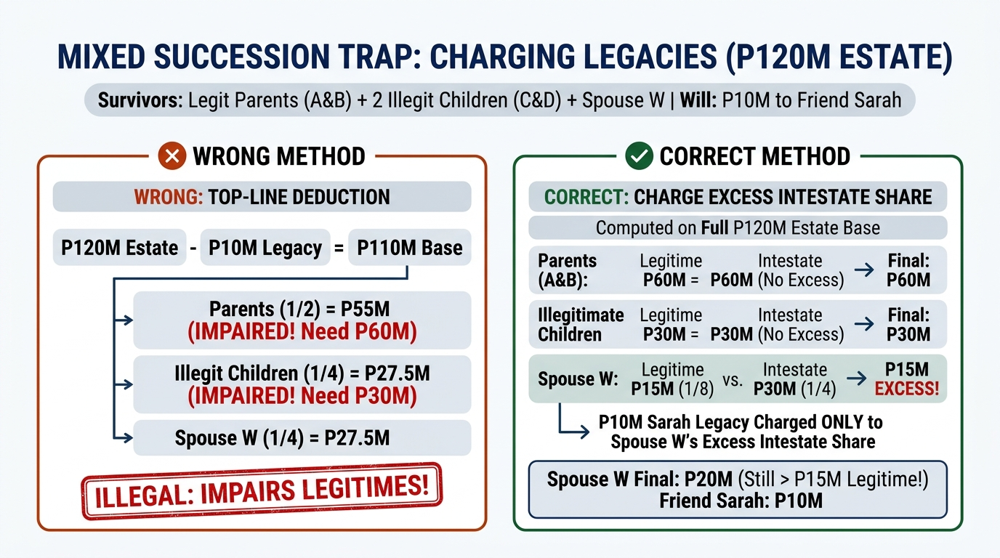
Figure 11: Mixed Succession Trap (₱120M Estate) — Never Deduct Legacies Off the Top; Charge Only the Excess Intestate Share (Click image to enlarge)
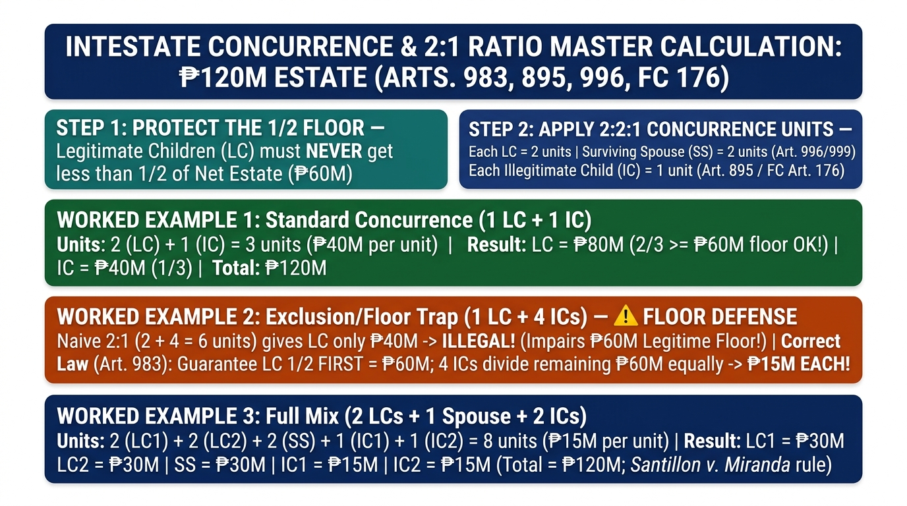
Figure 12: Intestate Concurrence (Concurrence 2:1 Theory vs. Exclusion Theory) & Mixed Legacy Deduction Formula (Click image to enlarge)
XI. Right of Representation, Universal Repudiation, Adoption & Art. 992
[Intestate Shares (983–1009)] → [YOU ARE HERE: Sec. XI — Stepping Into Shoes & Art. 992 (969–977, 990, 992, 777)] → [Part IV: Common Rules (Arts. 1015+)]
CHAIN-OF-LOGIC BRIDGE Proximity normally makes children exclude grandchildren. Representation explains when younger generations jump up a degree to take a predeceased/incapacitated/disinherited parent's share—and where repudiation (Art. 977) or the Iron Curtain (Art. 992) blocks that jump.
WHY THE LAW CARES Preserves branch equality (per stirpes) across generations while stopping representatives from taking more than their own branch unless all first-degree heirs repudiate (Art. 969), and clarifies when Art. 777 (Dela Merced) bypasses Art. 992 entirely.
Direct Descending: ALWAYS • Direct Ascending: NEVER • Collateral: ONLY in intestacy for nephews/nieces concurring with ≥1 surviving uncle/aunt (per stirpes; if no uncle/aunt survives, nephews/nieces take per capita). Grandnieces are excluded (De Los Santos v. De La Cruz, G.R. No. L-29192).
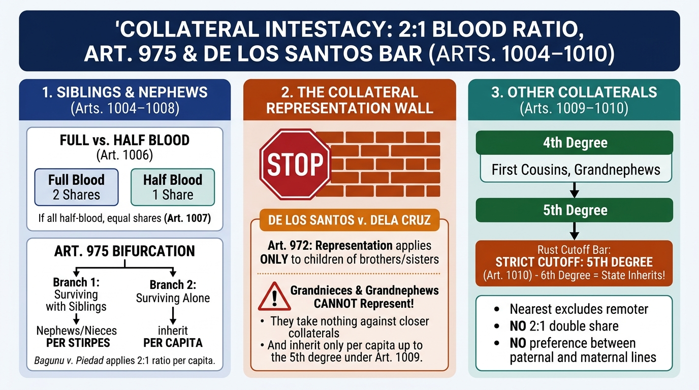
Figure 13: Collateral Intestacy & Double-Share Mechanics — Rank 5 Nephews Beat Rank 6 Uncles, Per Stirpes vs. Per Capita (Art. 975), 2:1 Ratio & De Los Santos Grandniece Exclusion (Click image to enlarge)
[MEM] Two-Way Repudiation Maxim: "Repudiation Kills Representation (Art. 977), NOT Downward Transmission (Art. 976)."
• Art. 977: An heir who repudiates CANNOT be represented by his children.
• Art. 976: A child MAY represent a predeceased parent whose own indebted estate the child renounced (inherits directly from grandparent).
• Universal Repudiation (Art. 969): If ALL nearest-degree children repudiate, grandchildren cannot represent them—instead they inherit in their own right (per capita)!
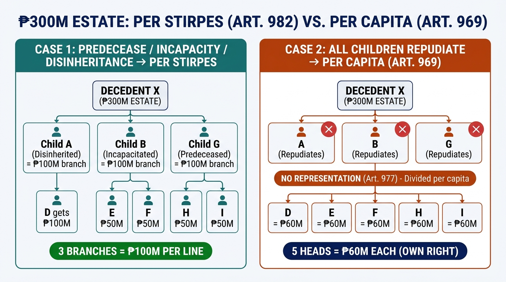
Figure 14: The ₱300M Estate — Per Stirpes Representation (Art. 982) vs. Universal Repudiation Per Capita (Art. 969) (Click image to enlarge)
Adoption & Article 992 ("Iron Curtain Rule") vs. Dela Merced (Art. 777)
1. Adopted Children & RepresentationClassroom Rule vs. R.A. 11642
Professor's Rule
Adoption creates a purely personal civil tie (fictio iuris) solely between adopter and adoptee. Thus, an adopted child inherits directly as a legitimate child of the adopter, but cannot represent the adopter and cannot be represented by his descendants in the estate of the adopter's relatives.
Current Law / Bar Update
Under R.A. 11642, Secs. 41 & 43 (Domestic Administrative Adoption and Alternative Child Care Act), legitimate filiation created between adopter and adoptee now extends to the adopter's parents, adopter's legitimate siblings, and legitimate descendants, altering the old exclusivity/"stranger-to-the-adoption" bar. Check the applicable statute/time of death on exam questions!
Professor's Rule(a) Predeceased Legitimate Child: Represented ONLY by legitimate descendants (illegitimate child barred by Art. 992). (b) Predeceased Illegitimate Child: Represented by BOTH legitimate and illegitimate descendants (Arts. 902, 990) in a 2:1 ratio (e.g., ₱30M share → Legitimate E = ₱20M, Illegitimate F = ₱10M). Bar Terminology Caution: Keep using the statutory term "illegitimate children" on Bar exams rather than "nonmarital children." Note: Art. 992 restricts intestacy only—never bars voluntary gifts from the free portion.
Current Law / Bar Update (Aquino)
In Aquino v. Aquino (G.R. Nos. 208912 & 209018, Dec. 7, 2021, En Banc), the Supreme Court relaxed Art. 992 in the direct ascending/descending line: a nonmarital (illegitimate) grandchild may now represent a predeceased marital or nonmarital parent to inherit from a legitimate grandparent. However, the collateral Iron Curtain still applies (no intestate inheritance from/by legitimate siblings, uncles, or aunts).
The Order-of-Deaths Escape — Dela Merced v. Dela Merced (G.R. No. 126707, Feb. 25, 1999):
Verified Facts (Correcting Oct. 19 Lecture Slip): Legitimate sister Evarista (mistyped "Evaristo" in Oct. 19) died intestate first (1987). Her legitimate brother FranciscoSURVIVED her (did not predecease her) and died a year later (1988), leaving illegitimate son Joselito.
Ratio: Under Art. 777, Evarista's 1/3 share vested immediately in living Francisco upon Evarista's death, entering Francisco's own personal estate. When Francisco died, Joselito inherited directly from his father Francisco (Art. 988), NOT by representation in Aunt Evarista's estate—so Art. 992 is completely inapplicable!
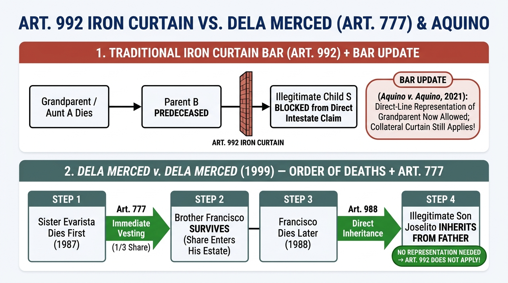
Figure 15: Art. 992 Iron Curtain & Aquino Update vs. Dela Merced (Art. 777 Two-Step Vesting) (Click image to enlarge)
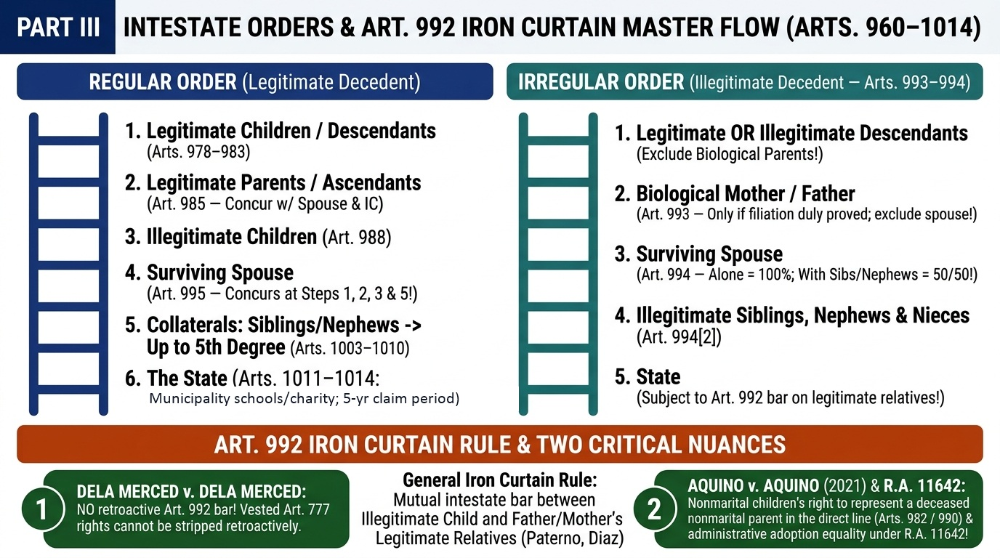
Figure 16: Part III Decision Flowchart — Trace Rank 1–7 Exclusion, Representation vs. Art. 969 Per Capita, and Art. 992 vs. Aquino & Dela Merced (Click image to enlarge)
YES (Dela Merced, Art. 777): Share vested immediately in living B at A's death.
Outcome: Child inherits directly from B (Art. 988) — Art. 992 does NOT apply!
Step 3A: Predeceased Parent + Collateral Line
Nephews/Nieces (Art. 975): Represent only when surviving with ≥1 uncle/aunt; grandnieces barred (De Los Santos).
Collateral Art. 992: Nonmarital child STILL barred from legitimate uncles, aunts, and collateral relatives even after Aquino.
Step 3B: Predeceased Parent + Direct Line
Professor's Classroom Rule: Legitimate child represented ONLY by legitimate descendants (Art. 992).
Bar Update (Aquino 2021): En Banc permits nonmarital grandchild to represent parent in the direct ascending/descending line.
PART IV: ACCRETION, VACANCY MATRIX, CAPACITY, UNWORTHINESS & ACCEPTANCE/REPUDIATION
Part IV Big-Picture Anchor (Title IV, Chapter 4 — Arts. 1015–1057): Having learned Testate Disinheritance (Part I), Legacies & Devises (Part II), and Intestate Distribution (Part III), Chapter 4 supplies the common machinery operating across BOTH modes: where failed shares go (Accretion & Vacancy Matrix), who is disqualified before taking (Capacity & Unworthiness), and how living heirs bind their decision (Acceptance & Repudiation).
XII. Right of Accretion (Arts. 1015–1021)
[Part III: Intestacy] → [YOU ARE HERE: Sec. XII — Accretion Mechanics (Arts. 1015–1021)] → [Master Vacancy Matrix]
STATUTORY ADDRESS Common Provisions, Chapter 4, Section 1 — Right of Accretion (Arts. 1015–1021).
CHAIN-OF-LOGIC BRIDGE When an instituted co-heir or legatee drops out (R-I-P), what happens to their slice before the estate falls back into intestacy? Accretion lets surviving pro indiviso co-heirs absorb that failed share.
WHY THE LAW CARES Respects a testator's lump-sum collective gift (or an intestate co-heir's joint call when someone repudiates under Art. 1018) while refusing to apply to a legitime (Art. 1021[2]) or earmarked physically segregated assets (Art. 1017).
[MEM] Mnemonic — U-P-R-A (Succession Accretion, NOT Property Alluvion under Art. 457):Unity of Object • Plurality of Subjects Pro Indiviso (NO earmarking!) • RIP Vacancy (Repudiation, Incapacity, Predecease + failed condition / Art. 845 unidentifiable heir) • Acceptance & Absence of Substitute.
Aliquot Fractions vs. Physical Earmarking (Art. 1017):
Aliquot ("1/2 each", "in equal shares"):Accretion APPLIES (unity of object preserved until partition).
Physical Earmarking: Giving BPI savings account to A, Metrobank current account to B, and home vault cash to C (or Northern half to A, Southern half to B) DESTROYS unity of object and BARS accretion.
Accretion in Intestacy (Art. 1018 — Why Text Names Only Repudiation):
Professor's Favored ViewJustice Jurado's Non-Vacancy Theory: In intestacy, predecease and incapacity create no Art. 1018 vacancy because either representation applies or the dead/incapacitated person was never called at death (Art. 777), so survivors take in their own right (iure proprio). Repudiation creates a true post-opening vacancy (since Art. 977 bars representation) and always accrues to co-heirs.
Alternative ViewPro-Accretion Analogy View: Applies Art. 1016 by analogy if predeceased/incapacitated intestate heirs leave no representatives (identical final numbers).
Compulsory Heirs (Art. 1021): Accretion applies ONLY to the free portion (Art. 1021[1]). If the legitime is repudiated, co-heirs succeed in their own right (iure proprio), NOT by accretion (Art. 1021[2]).
ACCRETION GATEKEEPER FLOW (ARTS. 1015–1021)
Does a Vacant Share Accrue Pro Indiviso to Co-Heirs?
CHAIN-OF-LOGIC BRIDGE Previously you studied Substitution, Representation, Accretion, and Intestacy as separate tools. Whenever someone rejects or drops out of an estate (R-I-P), all four tools compete—this matrix reveals the exact tie-breaking priority for every slice of property.
WHY THE LAW CARES Enforces two bedrock policies simultaneously: absolute immunity of the compulsory legitime (never burdened by substitution) and primacy of the testator's expressed Plan B (substitution beats accretion in the free portion).
Two Philosophical Pillars (Arts. 872, 904 & Primacy of Will)
1. EXTENSION OF OWNERSHIP
Testator's expressed will (Substitution) always outranks presumed will (Accretion) & Intestacy in the Free Portion.
2. IMMUNITY OF THE LEGITIME
No burden, condition, or substitution can touch the Legitime (Arts. 872, 904); only valid disinheritance strips it.
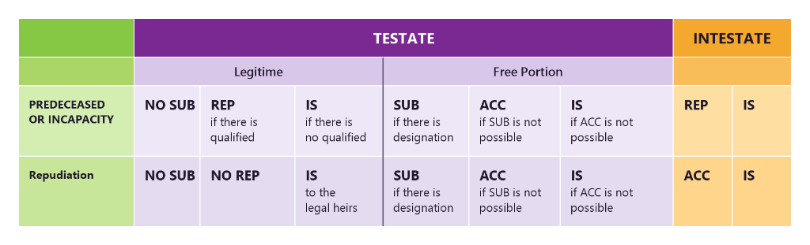
Figure 17: Professor's Classroom Vacancy Matrix — Separate Testate (Legitime vs. Free Portion) and Intestate Columns (Click image to enlarge)
Cause of Vacancy
Column 1: Testate — Legitime
Column 2: Testate — Free Portion
Column 3: Intestate — Whole Share
Predecease or Incapacity
NO SUB → 1. REP (descending line) → 2. IS (co-heirs own right / legal heirs)
NO REP → 1. SUB (if named) → 2. ACC (Art. 1016) → 3. IS
NO SUB → 1. REP → 2. IS(or ACC under minority analogy view)
Repudiation
NO SUB / NO REP (Art. 977) / NO ACC (Art. 1021[2]) → IS / Own Right
NO REP (Art. 977) → 1. SUB (if named) → 2. ACC (Art. 1016) → 3. IS
NO SUB / NO REP (Art. 977) → 1. ACC (Art. 1018) → 2. IS (next degree, Art. 969)
PART IV DECISION ARCHITECTURE — 3-COLUMN VACANCY FUNNEL
Master Vacancy Routing Hierarchy (Isolate Each Slice Before Applying R-I-P)
Step 1: Slice Every Heir's Baseline Into 3 Independent Buckets
Never mix Legitime + Free Portion math! Split each failed beneficiary into Col. 1 (Testate Legitime), Col. 2 (Free Portion), or Col. 3 (Intestate Share).
↓ Step 2: Check Cause (Predecease / Incapacity vs. Repudiation) ↓
Column 1: Testate — Legitime
If Predecease / Incapacity:NO SUB → 1. REP (direct descending line) → 2. IS / Own Right if no qualified descendant.
If Repudiation:NO SUB / NO REP (Art. 977) / NO ACC → IS / Co-Heirs in Own Right (Art. 1021[2]).
Column 2: Testate — Voluntary Free Portion
Regardless of R-I-P Cause:NO REP EVER on Voluntary Free Portion!
Priority Order:1. SUB (if named in will) → 2. ACC (Art. 1016pro indiviso) → 3. IS (Art. 960[2]).
Column 3: Intestate — Whole Share
If Predecease / Incapacity:1. REP (descendants or nephews/nieces with uncle) → 2. IS / Own Right (Jurado Non-Vacancy View).
If Repudiation:NO REP (Art. 977) → 1. ACC to Co-Heirs (Art. 1018) → 2. Next Degree Per Capita if all repudiate (Art. 969).
The ₱120M Master Problem (Settled Testate Answer vs. Pure Intestacy)
Facts: Testator X dies leaving a ₱120M net estate (equivalent in Part 2 to ₱120,000 scaled 1,000×) and 4 legitimate children: A, B, C (predeceased, leaving kids E & F), and D (repudiates, leaving kid G). In the Testate version, the will institutes A, B, C, and D to the entire estate without substitutes.
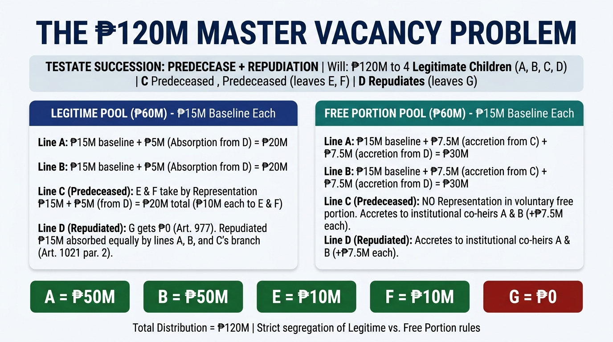
Figure 18: Authoritative ₱120M Master Vacancy Solution — Strict Segregation of Legitime vs. Free Portion Rules (Click image to enlarge)
+₱7.5M (C's FP via ACC) + ₱7.5M (D's FP via ACC) + ₱5M (D's Leg via 3-way Art. 1021[2])
₱50M
₱45M (₱30M + ₱15M D's ACC)
Child B
₱15M Leg + ₱15M FP
+₱7.5M (C's FP via ACC) + ₱7.5M (D's FP via ACC) + ₱5M (D's Leg via 3-way Art. 1021[2])
₱50M
₱45M (₱30M + ₱15M D's ACC)
Grandchild E (of C)
₱0
+₱7.5M (C's Leg via REP) + ₱2.5M (D's Leg via 3-way Art. 1021[2])
₱10M
₱15M (1/2 of C's ₱30M)
Grandchild F (of C)
₱0
+₱7.5M (C's Leg via REP) + ₱2.5M (D's Leg via 3-way Art. 1021[2])
₱10M
₱15M (1/2 of C's ₱30M)
Grandchild G (of D)
₱0
₱0 (Barred by Art. 977: repudiating heir cannot be represented)
₱0
₱0 (Art. 977 bar)
Settled Classroom Solution (A = ₱50M | B = ₱50M | E = ₱10M | F = ₱10M | G = ₱0):
Free Portion Accretion (Art. 1016): Voluntary free-portion shares (C's ₱15M FP and D's ₱15M FP) never pass by representation; with no substitute named, both accrue equally to surviving accepting co-heirs A & B (+₱7.5M + +₱7.5M = +₱15M each).
3-Way Own-Right Redistribution of D's ₱15M Repudiated Legitime (Art. 1021[2]): Because repudiation bars representation (G = ₱0, Art. 977) and accretion cannot operate on the legitime, the ₱60M collective legitime redistributes equally across all 3 surviving branches—A (₱20M), B (₱20M), and C's branch E & F (₱20M total → ₱10M each; adding +₱5M to A, +₱5M to B, and +₱2.5M each to E & F)—because grandchildren representing a predeceased child step directly into X's succession.
XIV. Capacity to Succeed, Undue Influence & Unworthiness (Arts. 1024–1039, 40–43)
[Vacancy Mechanics] → [YOU ARE HERE: Sec. XIV — Threshold Qualification (Arts. 1024–1039, 40–43)] → [Heir's Final Choice (Arts. 1041–1057)]
STATUTORY ADDRESS Common Provisions, Chapter 4, Section 2 — Capacity to Succeed by Will or by Intestacy (Arts. 1024–1039; Personhood Arts. 40–43; Arts. 739, 823).
CHAIN-OF-LOGIC BRIDGE Before an heir can trigger a vacancy or accept a share, you must pass the threshold gate: Is this beneficiary legally alive/qualified at death? Are they disqualified from the free portion due to sickbed undue influence (Art. 1027), or completely unworthy across testate, intestate, and legitime (Art. 1032)?
WHY THE LAW CARES Protects vulnerable dying testators from spiritual, medical, or legal manipulation during their last illness, prevents unfaithful paramours/attackers from profiting from crimes, and safeguards unborn infants under the 24-hour intrauterine threshold.
A. Conceived Children (Arts. 40–41, 1025), Simultaneous Death (Art. 43) & Pious Works (Art. 1029)
Intrauterine Life Rule (Arts. 40–41, 1025): Never write "7 months old"—always write "intrauterine life"!
< 7 Months Intrauterine Life: Must survive 24 full hours after complete delivery (cutting of the umbilical cord).
≥ 7 Months Intrauterine Life: Born and capacitated the instant it is alive at cord cut—even if it dies 5 minutes later (share passes to infant's own heirs).
Simultaneous Death (Art. 43): Doubt as to who died first → presumed simultaneous → no transmission between them, EXCEPTArt. 43 does NOT bar representation (grandchildren inherit directly from grandparent).
Non-Natural Beneficiaries: Public-interest associations (Art. 1026); the poor (Art. 1030); Prayers for the Soul (Art. 1029) = 50% Church / 50% State (Art. 1013) ONLY IF general and without specified application (100% follows testator's specified masses/parishes if stated!).
B. Incapacity by Reason of Possible Undue Influence (Art. 1027)
[MEM] Mnemonic — P-R-G-W-M + 3 Ironclad Shields:Priest/Minister • 4th-deg Relatives & Church • Guardian • Witness • Medical/Druggist (= Pharmacist!). Shields: (1) Testamentary Free Portion ONLY; (2) NEVER affects Intestacy or the Legitime; (3) Will made while healthy BEFORE last illness is VALID.
Par. 1 (Priest / Minister):Catholic priest must hear sacramental confession during last illness (praying Rosary ≠ confession, though Oct. 19 warns Rosary may trigger "spiritual aid"). Protestant minister barred upon extending any spiritual aid. All 5 sequential confessing priests during last illness are barred; longtime friend-priest still barred if will made during last illness.
Par. 2 (Priest's 4th-Degree Relatives & Church/Order): Extends bar to 4th civil degree and religious institution.
Par. 3 (Guardian): Barred before approval of final accounts (even if ward dies after approval). Express Exception: Valid if guardian is ascendant, descendant, brother, sister, or spouse.
Par. 4 (Attesting Witness + Spouse/Parents/Children; Art. 823): Valid if 3 other competent witnesses remain.
Par. 5 (Physician, Surgeon, Nurse, Health Officer, Druggist = Pharmacist): Must have actually taken care of testator during last illness (mere consulting specialist Dr. A is NOT barred).
Professor's Favored ViewCultural / Teleological Exemption: When the attending physician, nurse, or priest is the testator's own child, spouse, sibling, or ascendant, Art. 1027 should NOT bar them even from the free portion (Filipino filial duty would be absurdly penalized).
Alternative ViewStrict Expressio Unius View: Since Par. 3 exempted close relatives while Pars. 1 & 5 did not, Father A (priest-son), Dr. B (doctor-son), and C (2nd-degree sibling) are barred from the free portion—yet in the ₱120M example, they STILL keep their ₱60M legitime AND inherit the ₱60M free portion by intestacy (beating First Cousin FC, 5th degree from Father A)!
C. Morality (Art. 1028 / 739) & Unworthiness (Arts. 1032–1039)
Art. 1028 in rel. to Art. 739: Testamentary gifts to a paramour/mistress with whom testator was guilty of adultery or concubinage at execution are VOID.
Unworthiness (Arts. 1032, 1035): Operates automatically by law in both testate and intestate succession and strips even the legitime (8 grounds summarized in class: abandoning/corrupting children, attempt on life, false accusation ≥6 yrs, failure to report violent death within 1 month, conviction of adultery/concubinage with spouse [Par. 5], fraud/violence on will, falsifying/suppressing will).
The Art. 1032(5) Paramour Paradox: Only the paramour (e.g., Brother B) is disqualified under Art. 1032(5)—the unfaithful spouse (Wife W) is NOT covered! If Husband X dies intestate after convicting both, Wife W inherits 100%! [MEM] Professor's Hook:"Write a holographic will disinheriting the unfaithful spouse immediately (Art. 921[4])!"
Pardon (Art. 1033) vs. Reconciliation (Art. 922):
NO disinheritance in a will:Art. 1033 governs → needs Written Condonation OR Implied Testamentary Pardon (instituting heir in will with prior knowledge). Informal/tearful reconciliation FAILS.
Expressly disinherited in a will:Art. 922 governs → informal bilateral reconciliation suffices.
Moment of Capacity (Art. 1034): General rule = moment of death. Suspensive Condition = DUAL MOMENTS (capacitated at BOTH death AND fulfillment of condition). For Art. 1032(2, 3, 5), wait for final judgment.
Nationality Principle (Art. 1039 & Art. 16[2]) — O-A-I-C:Order of succession, Amount of successional rights, Intrinsic validity of provisions, and Capacity to succeed are always governed by the national law of the decedent.
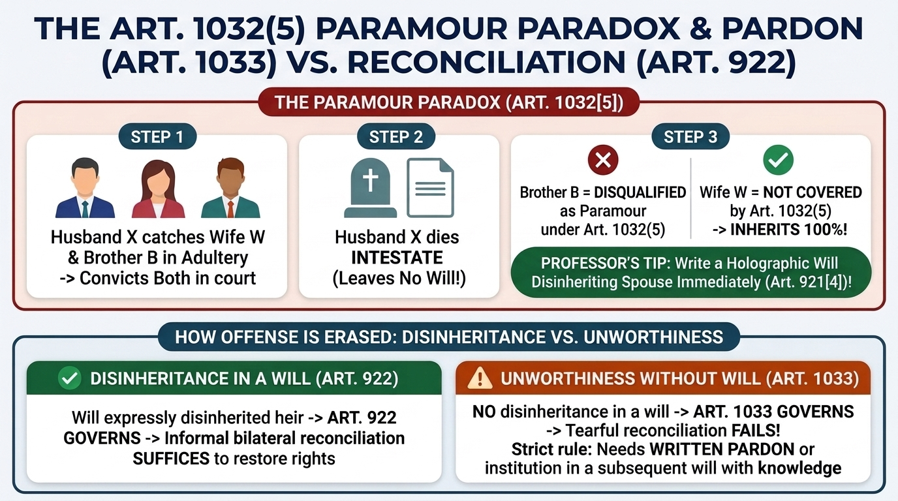
Figure 20: The Art. 1032(5) Paramour Paradox & Erasing Offenses (Art. 922 Reconciliation vs. Art. 1033 Written Pardon) (Click image to enlarge)
XV. Acceptance & Repudiation of Inheritance (Arts. 1041–1057, 390–392, 954–955)
[Capacity & Unworthiness (1024–1039)] → [YOU ARE HERE: Sec. XV — Exercise of the Heir's Choice (Arts. 1041–1057)] → [Part V: Drills]
STATUTORY ADDRESS Common Provisions, Chapter 4, Section 3 — Acceptance and Repudiation (Arts. 1041–1057; Presumptive Death Arts. 390–392).
CHAIN-OF-LOGIC BRIDGE Even when a heir survives the testator and holds full legal capacity, inheritance is never forced upon an unwilling recipient. Section XV governs how a living heir locks in or rejects their inheritance—and what happens when they try to cheat their own creditors (Art. 1052) or play games between testate and intestate shares (Art. 1055).
WHY THE LAW CARES Prevents ownership limbo (*interregnum*) via retroactivity to death (Art. 1042), blocks fake "waivers" that secretly act as transfers (Art. 1050), requires judicial protection for minors/wards (Art. 1044), and prevents debtors from renouncing wealth to stiff creditors.
[MEM] Core Anchor — V-R-I & "Death + Right":Voluntary & Free (Art. 1041) • Retroactive to Death (Art. 1042) • Generally Irrevocable (Art. 1056). Requires certainty of DEATH + RIGHT (Art. 1043).
Voluntariness & Partial Choice (Art. 1041): Even a legitime may be repudiated after death (never future expectancy before death). Paras Commentary: Partial acceptance/repudiation permitted, subject to Arts. 954–955 (cannot keep gratuitous legacy and reject connected onerous legacy where barred).
Retroactivity & Pure Choice (Art. 1042): Effects relate back to death (Jan 1 death → Mar 1 acceptance = Jan 1 effects), preventing an interregnum. Heir's choice itself cannot carry a condition or term.
Presumptive Death (Arts. 390–392): Ordinary absence = 10 years (5 years if disappeared after age 75). 7 years does NOT open succession! Danger of death (Art. 391: vessel/plane/war/peril) = 4 years. Returning absentee (Art. 392) recovers property/price/replacement, NOT fruits or rents.
Person / Entity
Acceptance
Repudiation
Critical Trap / Statutory Update
Free Disposal (Art. 1044; R.A. 6809)
Personally (Age 18+)
Personally (Age 18+)
Capacity to inherit ≠ capacity to choose personally.
Minors / Wards (Art. 1044)
Parents / guardians
Judicial authorization REQUIRED
Guy v. CA (G.R. No. 163707): Notarized waiver without court approval = VOID.
The Poor (Arts. 1044, 1030)
Named person → Executor → Justice of Peace, Mayor & Treasurer (majority + court approval)
Beneficiaries themselves once determined
Selection authority ≠ power to surrender poor's share.
Juridical Entities (Art. 1045)
Lawful representative
Court approval REQUIRED
Entity must be legally qualified to acquire property.
Public Official Establishments (Art. 1046)
Government approval REQUIRED
Government approval REQUIRED
Even if unconditional! Note: Red Cross is sui generis, not a plain example.
Married Woman of Age (Art. 1047)
Personally
Without husband's consent
Correction: Old Civil Code Arts. 114 & 200 were repealed by Family Code.
True Repudiation (Art. 1051)
Must be express via (1) public instrument (notarized), (2) authentic instrument, or (3) petition to settlement court. Mere roof repair, collecting fruits/rent provisionally (Art. 1049), or informally saying "I don't want it" is neither acceptance nor valid repudiation.
Deemed Acceptance Traps (Art. 1050)
Labeling a document "waiver" does NOT save it! Deemed acceptance occurs upon: (1) selling, donating, or assigning hereditary rights (Ignacio v. Martinez, 33 Phil. 576 — ₱2,500 debt, correcting Paras's ₱25,000 typo); (2) selective gratuitous renunciation to 1 or some co-heirs; (3) renunciation for a price even to all co-heirs. ONLY Exception:Gratuitous AND indiscriminate waiver in favor of exact accretion co-heirs.
Creditors' Remedy (Art. 1052): Requires (1) existing debt, (2) valid repudiation, (3) prejudice, and (4) judicial authorization. Any single creditor may accept in heir's name only up to the debt; renouncer gets ZERO excess (balance goes to co-heirs/legal heirs).
Transmission (Art. 1053) vs. Individual Choice (Art. 1054): If B survives A and dies undecided, option passes to B's heirs (who must accept B's estate to use it, and may independently accept/reject per share).
Dual Capacities in Same Estate (Art. 1055): Testamentary repudiation kills BOTH capacities; intestate repudiation without knowledge of will leaves testamentary acceptance open. (Paras commentary: even knowing intestate waiver allows testamentary acceptance—treat as commentary only).
Irrevocability (Art. 1056) & 30-Day Rule (Art. 1057): Irrevocable unless vitiated consent (lawful suit threat under Art. 1335 ≠ intimidation) or unknown will appears (substantial changes per Manresa). Art. 1057's 30-day deemed acceptance runs ONLY from the court's ORDER OF DISTRIBUTION, never from death!
Formalities (Arts. 1044, 1051): Public/authentic doc or court petition (+ court approval for minors).
Prejudices Creditors (Art. 1052): Creditor collects debt via court order; excess goes to co-heirs (renouncer = ₱0).
Dual Roles (Art. 1055): Repudiating as testamentary heir forfeits intestate right too; retroactive to death (Art. 1042).
PART V: MNEMONIC BANK, CHECKLIST, 24 BAR DRILLS & 25 RAPID TRAPS
Part V Big-Picture Anchor (Quiz Mastery & Self-Testing): Everything from Disinheritance (Arts. 915–923), Legacies & Devises (Arts. 924–959), Intestacy, Accretion, Vacancy, Capacity, and Acceptance/Repudiation now locks into high-speed exam recall—walk through the 5-step Quiz Checklist and test yourself on all 24 ALAC drills and 25 rapid traps below.
XVI. Master Mnemonic Bank, Golden Numbers & 5-Step Quiz Checklist
WELSTUT
7 Requisites (915–917)
Will, Express, Lawful, Stated, True, Unconditional, Total
Isolate Legitime vs. Free Portion vs. Intestate; flag Art. 977 (repudiation kills rep), Art. 969 (all repudiate → per capita), and Art. 1017 earmarking.
Express Art. 1051 form + court approval for minors (Guy) • Spot Art. 1050 selective waivers • Art. 1052 creditor cap (₱0 excess) • Art. 1055 & Art. 1057 (30d from distribution order).
XVII. 24 Sample Bar-Style ALAC & Recall Drills (Self-Test Drill)
Self-Test Mode: Try computing or reciting your ALAC (Answer–Law–Application–Conclusion) response before clicking to reveal. Answers auto-expand when printing to PDF!
Problem 1 — Conditional Disinheritance vs. Conditional Lifting (Arts. 915–917)
X's will states: (Clause 1) "I disinherit my son A if he ever joins a rival political party." (Clause 2) "I disinherit my daughter B because she is presently living a scandalously dishonest life as a notorious swindler; however, if she reforms, leaves the syndicate, and reconciles with me, this disinheritance is lifted." Are Clauses 1 and 2 valid?
Reveal Suggested ALAC Answer
Answer: Clause 1 is VOID; Clause 2 is VALID. Law & Application: Under Arts. 915–916, disinheritance requires an existing statutory cause and must be unconditional. Clause 1 uses a non-statutory, future contingent event and makes the disinheritance itself conditional. Clause 2 rests on an existing statutory cause under Art. 919(7) (dishonorable life), and the condition attaches validly to the revocation/lifting (conditional pardon), not the disinheritance. Conclusion: A retains his legitime; B's disinheritance stands unless she fulfills the lifting condition.
Problem 2 — Attempt on Life Without Conviction vs. Art. 919(6) Fallback
Son D stabs his father X with intent to kill. X survives and files no criminal case to avoid scandal. X's will disinherits D for "physically assaulting and maltreating me by deed when he stabbed me." D argues the disinheritance fails for lack of conviction. Rule on D's argument.
Reveal Suggested ALAC Answer
Answer: D's challenge FAILS; the disinheritance is VALID. Law & Application: While Art. 919(1) requires final conviction for an attempt on life, Art. 919(6) (maltreatment by word or deed) requires no criminal conviction. Because X expressly stated maltreatment by deed in the will and provided the other heirs prove the stabbing if denied (Art. 917), lack of conviction does not defeat the disinheritance. Conclusion: D is validly disinherited.
Problem 3 — Art. 920(8) vs. Art. 920(2): Parental Reconciliation After Conviction
Father F attempts to murder Mother M and is convicted by final judgment of frustrated parricide. While F is in prison, M forgives F and reconciles with him. Their child C later executes a will disinheriting F. F invokes M's forgiveness. May C still validly disinherit F?
Reveal Suggested ALAC Answer
Answer:YES. Law & Application: Parental reconciliation extinguishes the child's right only under Art. 920(8) (attempt without conviction). Because F suffered a final judgment of conviction for attempting against the life of C's ascendant (Mother M), Art. 920(2) governs. Under Art. 922, only reconciliation between F and the testator C himself extinguishes Art. 920(2). Conclusion: C's disinheritance of F is valid despite M's forgiveness.
Problem 4 — Imperfect Disinheritance Without vs. With Preterition (₱120M)
X has 4 legitimate children (A, B, C, D) and a ₱120M net estate. Version 1: "I disinherit D; I institute A, B, and C to my whole estate." Version 2: "I disinherit D; I institute A and B as sole heirs" (omitting C). Distribute both versions.
Reveal Suggested ALAC Answer
Version 1 (No Preterition): D's disinheritance is void for stating no cause (Art. 918), which annuls the institution only insofar as it prejudices D's legitime. Collective legitime = ₱60M (₱15M each); ₱60M FP remains validly with A, B, C (₱20M each). Result: A=₱35M, B=₱35M, C=₱35M, D=₱15M. Version 2 (With Preterition of C): Complete omission of C triggers preterition (Art. 854), totally annulling the institution of A and B and opening intestacy. Result: A=₱30M, B=₱30M, C=₱30M, D=₱30M.
Problem 5 — Proximity vs. Order of Intestacy & Double-Share Collaterals
X (legitimate) dies intestate without descendants, ascendants, or spouse, leaving Uncle U (brother of X's father), Full-blood Nephew N1, Half-blood Nephew N2, and First Cousin FC. Net estate: ₱12M. Distribute.
Reveal Suggested ALAC Answer
Answer:N1 = ₱8M; N2 = ₱4M; U = ₱0; FC = ₱0. Law & Application: Under Art. 962, proximity yields to the Order of Intestate Succession: although U, N1, and N2 are all 3rd-degree collaterals, nephews/nieces belong to Rank 5 (Art. 1003) and exclude Uncle U and First Cousin FC (Rank 6). Under Art. 1008, full-blood N1 takes double half-blood N2's share (2:1). Conclusion: N1 takes ₱8M; N2 takes ₱4M.
Problem 6 — Universal Repudiation (*Per Capita*, Art. 969)
X dies intestate leaving ₱300M, 3 living children (A, B, G), and 5 grandchildren (D from A; E & F from B; H & I from G). All 3 children validly repudiate. Distribute the ₱300M estate.
Reveal Suggested ALAC Answer
Answer:D, E, F, H, and I each receive ₱60M. Law & Application: Repudiating heirs cannot be represented (Art. 977). Because all nearest-degree children repudiated, the grandchildren inherit in their own right (per capita) under Art. 969, dividing ₱300M equally by 5 heads rather than 3 branches. Conclusion: ₱60M to each of the 5 grandchildren.
Problem 7 — Art. 992, Aquino, and Dela Merced (Art. 777)
Legitimate sister Evarista dies intestate (₱90M) survived by her legitimate brother Francisco and two sets of nieces from predeceased sisters. One year later, Francisco dies intestate leaving legitimate child L and illegitimate child I. L invokes Art. 992 to exclude I from Francisco's ₱30M share from Evarista. Is L correct? Contrast if Francisco had predeceased Evarista.
Reveal Suggested ALAC Answer
Answer:L is WRONG. Law & Application: Under Dela Merced v. Dela Merced (G.R. No. 126707) and Art. 777, because Francisco survived Evarista, her ₱30M share vested in Francisco upon Evarista's death. Upon Francisco's death, I inherits directly from father Francisco (Art. 988), NOT from Aunt Evarista—so Art. 992 does not apply (L = ₱20M, I = ₱10M at 2:1). Contrast: Had Francisco predeceased Evarista, Art. 992 would bar I from claiming into Aunt Evarista's collateral estate (note: Aquino v. Aquino relaxed Art. 992 only in the direct grandparental line, not the collateral line).
X leaves a ₱24M net estate, legitimate parents P1 & P2, spouse W, and 2 illegitimate children C1 & C2. X's valid will has one clause: "I give ₱2M to my friend F."Compute each person's share.
Reveal Suggested ALAC Answer
Answer:Parents = ₱12M (₱6M each); ICs = ₱6M (₱3M each); F = ₱2M; W = ₱4M. Law & Application: Deducting ₱2M off the top (from ₱24M to ₱22M) illegally shrinks the base and impairs the parents' 1/2 (₱12M) and ICs' 1/4 (₱6M) legitimes. Comparing full-base legitimes vs. Art. 1000 intestate shares, only W has an excess (₱6M intestate − ₱3M [Art. 899] legitime = ₱3M excess). F's ₱2M comes strictly from W's excess, leaving W ₱4M. Conclusion: P1=₱6M, P2=₱6M, C1=₱3M, C2=₱3M, W=₱4M, F=₱2M.
Problem 9 — Earmarking & Exclusion of Accretion (Arts. 1016–1017)
X's will gives "the balance of my BPI account to A, the balance of my Metrobank account to B, and my home vault cash to C." A predeceases X leaving child D. No substitute is named. May B & C claim A's BPI account by accretion, or may D represent A?
Reveal Suggested ALAC Answer
Answer:NEITHER. Law & Application: Under Art. 1017, physical segregation (earmarking) of distinct bank accounts destroys unity of object, barring accretion to B and C. D cannot represent A because representation never applies to voluntary legatees. The BPI balance passes by intestacy (Art. 960[2]).
Problem 10 — The ₱120M Master Vacancy Problem (Testate vs. Intestate)
X leaves ₱120M by will equally to 4 legitimate children (A, B, C, D) without substitutes. C predeceased (kids E & F); D repudiated (kid G). Compute under (a) the Master Vacancy Matrix Formula and (b) Pure Intestacy.
Reveal Suggested ALAC Answer
(a) Testate (Settled Matrix Formula): Baseline = ₱15M Legitime + ₱15M FP each. C's ₱15M Leg → E & F by REP (₱7.5M each). C's ₱15M FP → A & B by ACC (₱7.5M each; no REP in FP). D's ₱15M FP → A & B by ACC (₱7.5M each; G=₱0 per Art. 977). D's ₱15M Leg → Art. 1021(2) 3-way split across active lines A, B, and C's branch (+₱5M A, +₱5M B, +₱2.5M each to E & F). Settled Final Answer: A=₱50M, B=₱50M, E=₱10M, F=₱10M, G=₱0. (b) Pure Intestacy: ₱30M baseline each. C's ₱30M → E & F by REP (₱15M each). D's ₱30M → ACC (Art. 1018) to A & B (₱15M each; G=₱0). Final: A=₱45M, B=₱45M, E=₱15M, F=₱15M, G=₱0.
Problem 11 — Intrauterine Life (Art. 41) & Art. 1027 Timing
While healthy in 2023, T executes a will giving the free portion to Father P (friend). In 2026, during T's last illness, T confesses to Father P, is cared for by Dr. D, and Specialist Dr. S is consulted once by phone. During this illness, T executes a codicil giving ₱5M to Dr. D and ₱2M to Dr. S. T dies survived by a 7.5-month fetus (child of predeceased son), which cries after the umbilical cord is cut and dies 5 minutes later. Resolve all gifts and the infant's capacity.
Reveal Suggested ALAC Answer
1. Father P's 2023 Gift: VALID. Will executed while T was healthy, long before last illness/confession. 2. Dr. D's 2026 Codicil: VOID (Art. 1027[5]). Dr. D actually took care of T during the last illness when the codicil was executed. 3. Dr. S's 2026 Codicil: VALID. A mere consulted specialist who did not attend continuously is not disqualified. 4. Infant: CAPACITATED (Arts. 40–41, 1025). With an intrauterine life ≥ 7 months, the infant acquired civil personality the instant it was alive at complete delivery (cord cut), even dying 5 minutes later; its represented share transmits to its own heirs.
Problem 12 — Art. 1032(5) Paramour Paradox & Art. 1033 vs. Art. 922
Husband X catches Wife W and Brother B (X's sole blood relative) in adultery; both are convicted by final judgment. X dies intestate two weeks later after tearfully saying on his deathbed, "I forgive both of you." No will exists. Who inherits X's estate?
Reveal Suggested ALAC Answer
Answer:Wife W inherits 100%; Brother B gets ₱0. Law & Application: Under Art. 1032(5), only the paramour (B) is unworthy—the unfaithful spouse (W) is NOT covered and remains capacitated in intestacy absent a disinheriting will (Art. 921[4]) or legal separation decree (FC Art. 63[4]). Because X executed no disinheritance in a will, Art. 1033 governs B's unworthiness, requiring an express written pardon; X's informal tearful forgiveness does not restore B.
X leaves ₱1.2M each to Adult Son A, Adult Daughter B, and 10-year-old Son M. (1) M's mother executes a notarized waiver of M's share without court approval. (2) Son A, owing Creditor C ₱300k with no other assets, executes a public instrument waiving his ₱1.2M "gratuitously in favor of M only."Rule on both acts and Creditor C's rights.
Reveal Suggested ALAC Answer
1. M's Waiver is VOID (Art. 1044; Guy v. CA): Notarization satisfies form only; repudiation of a minor's share requires judicial authorization. 2. A's Selective Waiver = DEEMED ACCEPTANCE (Art. 1050[2]): Waiving selectively for M (excluding B) is an acceptance + donation. Note that had A instead validly repudiated indiscriminately, Creditor C could petition under Art. 1052 to accept in A's name up to ₱300k, with the ₱900k balance going to co-heirs and ₱0 to A. Here, because A's act is a gratuitous donation to M defrauding C, C attacks the prejudicial transfer rather than a true repudiation.
X institutes friend H to 3/4 of his estate (1/4 undisposed). H survives X, does nothing for 45 days after X's death (no distribution order yet), then formally repudiates as testamentary heir. Separately, H survives decedent Y, dies undecided on Y's estate, and H's sole child K accepts H's estate while rejecting Y's estate. Resolve (a) Art. 1057 45-day silence, (b) H's claim to X's 1/4 intestate share, and (c) K's seemingly opposite choices.
Reveal Suggested ALAC Answer
(a) Not deemed accepted under Art. 1057: The 30-day period runs ONLY from the court's order of distribution, never from X's death. (b) H CANNOT claim the 1/4 intestate share (Art. 1055[1]): Repudiating as testamentary heir operates as a repudiation in both capacities for X's estate. (c) K's choices are VALID (Art. 1053): Because H survived Y and died undecided, H's option transmitted to K. Accepting H's estate and rejecting Y's involve two distinct decedents, not Art. 1055.
Problem 15 — Free Portion Ratio Contribution (Art. 926)
Net estate = ₱1,200,000. Compulsory heirs A and B (legitimate children) are instituted to 2/3 and 1/3 of the estate respectively, and charged generally with a ₱60,000 legacy to X. How much must A and B each contribute?
Reveal Suggested ALAC Answer
Answer:A pays ₱50,000; B pays ₱10,000. Law & Application: Total legitime = ₱600,000 (A = ₱300k; B = ₱300k). Total given to A (2/3) = ₱800,000 (₱300k legitime + ₱500k FP). Total given to B (1/3) = ₱400,000 (₱300k legitime + ₱100k FP). Under Art. 926 (Paras' rule), burdened compulsory heirs contribute strictly in proportion to their free-portion shares (500:100 = 5:1 → 5/6 and 1/6 of ₱60,000).
Problem 16 — Stranger's Property Without Express Order to Acquire (Art. 931 Doctrinal Split)
Testator T bequeaths "my neighbor's vintage Mustang" to L, knowing fully that his neighbor owns it, without writing any explicit instruction for the executor to buy it. Is the legacy valid? Explain opposing civilist views.
Reveal Suggested ALAC Answer
Prevailing View (Tolentino, Jurado, Paras):VALID — knowing that a third person owns the thing carries an implied order to acquire under Art. 931 (requiring an express order creates an internal conflict with Art. 930). Strict View (J.B.L. Reyes, Puno, Caguioa):VOID / INEFFECTIVE — Art. 931 strictly demands an express order in the will directing acquisition.
Problem 17 — Legatee's Subsequent Purchase After Testator Alienates (Art. 933 vs. Art. 957[2])
T executes a will giving L a specific painting belonging to T. Later, T sells the painting to S, and L buys it from S for ₱100,000 before T dies. Can L demand ₱100,000 reimbursement from T's estate?
Reveal Suggested ALAC Answer
Answer:NO. Law & Application: When T sold the painting to S, the legacy was immediately and impliedly revoked under Art. 957(2). L's later purchase from S does not revive the bequest or trigger reimbursement under Art. 933(2) (Paras).
Problem 18 — Generic Remission of Debts & Lawyer's Demand Letter (Arts. 936–937)
T executes a will stating: "I forgive all debts owed to me by my nephew N." At execution, N owed ₱200,000. Later, T lent N another ₱100,000 and sent a formal lawyer's demand letter for the ₱200,000 without filing a case. At T's death, how much (if any) is remitted?
Reveal Suggested ALAC Answer
Answer:₱200,000 is remitted; the subsequent ₱100,000 debt is NOT remitted. Law & Application: Under Art. 937, a generic remission covers only debts existing at the time of execution of the will. Under Art. 936, only bringing a judicial action (not an extrajudicial demand letter) revokes the legacy.
Problem 19 — Generic Movable Legacy vs. Indeterminate Immovable Devise (Arts. 941, 942, 928)
Explain why a generic legacy of "a 2024 SUV" is valid even if T owned no car at death, whereas a generic devise of "a 500-sqm commercial lot" is void if T owned no commercial lot—and state the standard of quality and eviction rule if T owned multiple cars.
Reveal Suggested ALAC Answer
Rule (Art. 941): Generic personalty is valid even if none exists in the estate (movables are fungible in commerce), whereas indeterminate realty is valid only if immovable property of that kind exists in the estate at death. Quality & Eviction: By default, the executor delivers medium quality (unless Art. 942 expressly grants choice to beneficiary), and the obligor is liable for eviction and hidden defects (Art. 928, subject to Paras' court-ordered delivery qualification).
Problem 20 — Pre-Death Arrears, Post-Death Rent & Loss Risk (Art. 948)
T devised an apartment building to D. T died on May 15. April rent (₱40,000) was overdue and unpaid; June rent (₱40,000) was later collected by the administrator. An earthquake destroys the building on May 20. Who owns each rent, and who bears the loss?
Reveal Suggested ALAC Answer
Answer:April rent belongs to the estate; June rent belongs to D; D bears the earthquake loss. Law & Application: Under Art. 948, specific devises transmit ownership, post-death fruits, and risk of loss (res perit domino) immediately upon death (May 15). Rent already due before death stays in the estate.
Problem 21 — Reduction Cutoff: Art. 911 vs. Art. 950 (R-P-S-E-S-A)
Testator dies leaving two legitimate children (A & B), net estate of ₱100,000 (legitime ₱50,000 intact; free portion ₱50,000), NO donations inter vivos, and four legacies: ₱20,000 remuneratory (R), ₱20,000 support (S), ₱20,000 education (E), and ₱20,000 cash (X). Which article applies and how much does each take?
Reveal Suggested ALAC Answer
Answer:Art. 950 applies: R = ₱20,000; S = ₱20,000; E = ₱10,000; X = ₱0. Law & Application: Because legitimes are intact and no collated donations inter vivos exist, Art. 950 pays the ₱50,000 free portion strictly in R-P-S-E-S-A order. (Contrast: If any donation inter vivos existed, Art. 911 would cut all four pro rata to ₱12,500 each.)
Problem 22 — Three Exceptions Where Alienation Fails to Revoke (Art. 957[2])
Under what three circumstances does an alienation (or purported alienation) of bequeathed property fail to permanently revoke the legacy or devise?
Reveal Suggested ALAC Answer
Three Exceptions: (1) Reacquisition via exercise of a right of repurchase (pacto de retro) (Art. 957[2]); (2) alienation annulled due to vitiated consent like fraud or undue influence (Fernandez v. Dimagiba); and (3) involuntary alienation (e.g., sheriff's execution sale) later reacquired by the testator (Paras/Scaevola view).
Problem 23 — Disposition "To My Relatives" (Art. 959, 6 Manresa 36 & Singson)
T leaves his entire ₱120,000 estate "to my relatives." Survivors: widow W, sister S, legitimate grandson G (from predeceased daughter), and nephew N (son of dead brother). Distribute.(Bonus: How would the outcome differ if T left only S and N and wrote "to all who are entitled thereto"?)
Reveal Suggested ALAC Answer
Answer:G = ₱75,000 (₱60k legitime + ₱15k FP); W = ₱30,000; S = ₱15,000; N = ₱0. Law & Application: Under Art. 892, G gets ₱60,000 legitime (1/2) and W gets ₱30,000 legitime (1/4), leaving ₱30,000 FP. Under Art. 959, W is excluded from "relatives" (consanguinity only). On the ₱30,000 FP, both G (2nd deg direct) and S (2nd deg collateral) stand equally nearest in degree (no line preference; 6 Manresa 36), taking ₱15,000 each while 3rd-deg N takes ₱0. (Bonus: Under Vda. de Singson v. De Lim, "to all who are entitled thereto" applies intestate representation → S and N get ₱60,000 each.)
Problem 24 — Mixed Succession Integration With ₱10M Legacy (Arts. 960[2], 1000, 899)
Suppose T executes a will containing only a ₱10M legacy to his friend F, leaving a ₱120M estate and survived by his legitimate parents, surviving spouse, and two illegitimate children. From whose intestate share is F's ₱10M legacy deducted?
Reveal Suggested ALAC Answer
Answer: Strictly from the surviving spouse's intestate share (leaving her ₱20M). Law & Application: Comparing full-base legitimes vs. Art. 1000 intestate shares, legitimate parents (1/2 = 1/2) and illegitimate children (1/4 = 1/4) have zero excess over legitime; only the spouse's intestate share (1/4 = ₱30M) exceeds her legitime (1/8 = ₱15M per Art. 899) by ₱15M, absorbing the ₱10M legacy cleanly.
XVIII. 25-Item 60-Second Rapid Trap Drill
1. T/F: A father disinherits his daughter in a notarized public instrument (Affidavit of Disinheritance). AnswerFalse — Must be in a valid, probated will (Art. 915).
2. T/F: If the disinherited heir denies the cause, he bears the burden of proving his innocence. AnswerFalse — Burden of proof rests on the other heirs (Art. 917).
3. Trap: Daughter receives an absolute presidential pardon for attempting to kill her father. Can father still disinherit her under Art. 919(1)? AnswerYes — Executive clemency erases penal liability to the State, not personal ingratitude.
4. Trap: Son is convicted of murdering a total stranger, carrying reclusion perpetua. May his mother disinherit him? AnswerYes — Art. 919(8) (civil interdiction) applies even if victim was a stranger.
5. T/F:Art. 920(1) inducement to immorality / attempt against virtue applies equally to sons and daughters. AnswerFalse — Abandonment is gender-neutral; inducement/virtue is female-specific.
6. Choice: Father attempts to kill Mother, is convicted by final judgment, and Mother forgives him. Child's disinheritance right under Art. 920(2): Extinguished or Survives? AnswerSurvives — Parental reconciliation extinguishes only Art. 920(8) (without conviction).
7. Compute: 1 legitimate child + surviving spouse in pure intestacy on ₱10M. How much each? Answer₱5M each — Art. 996 (Santillon v. Miranda).
8. T/F: Full-blood first cousins take double the share of half-blood first cousins. AnswerFalse — 2:1 double-share rule stops at siblings/nephews/nieces (Arts. 1006, 1008); Art. 1009 gives equal shares to other collaterals.
9. Degree Trap: Uncle vs. Nephew (both 3rd civil degree) in intestacy. Who inherits? AnswerNephew — Rank 5 excludes Rank 6; proximity (Art. 962) yields to Order.
10. Limit: Decedent X leaves only a first cousin's legitimate child (anak ng pinsang buo). Does the State escheat? AnswerNo — That child is 5th degree, the exact boundary under Art. 1010.
11. Trap: Grandchildren inherit after 1 child predeceased vs. after ALL children repudiate. Per stirpes or per capita? AnswerPredecease = per stirpes (Art. 982); All repudiate = per capita in own right (Art. 969).
12. Bar Update: Under Aquino v. Aquino (2021), can a nonmarital child represent a predeceased marital parent to inherit intestate from a legitimate uncle? AnswerNo — Aquino relaxed Art. 992 only in the direct grandparental line; the collateral curtain remains.
13. T/F: Saying "I give my house equally, 1/3 each, to A, B, and C" prevents accretion. AnswerFalse — Aliquot shares allow accretion; only physical earmarking bars it (Art. 1017).
14. Quick Rule: Free portion vacancy due to predecease, no substitute named: Representation or Accretion? AnswerAccretion — Voluntary shares in the free portion are never represented.
15. Trap: A fetus with a 6.5-month intrauterine life cries after cord cut and dies 18 hours later. Capacity acquired? AnswerNo — <7 months intrauterine life requires surviving 24 full hours after complete delivery (Art. 41).
16. Trap: Catholic priest only prays the Rosary with dying testator (no confession) and receives ₱1M in the will. Barred under Art. 1027(1)? AnswerNot under the confession clause, but Oct. 19 notes warn praying the Rosary may trigger "extending spiritual aid."
17. Quick Rule: Testator leaves ₱10M for masses "at Quiapo every Friday and Baclaran every Wednesday." Does the State get ₱5M under Art. 1029? AnswerNo — 50-50 Church-State split applies only when application is general and unspecified.
18. Quick Rule: Disinherited heir reconciles informally (no writing) vs. non-disinherited unworthy heir reconciles informally. Which is cured? AnswerOnly the disinherited heir (Art. 922). Pure unworthiness (Art. 1033) requires written or testamentary pardon.
19. T/F: Presumptive death after 7 years of ordinary absence opens succession under Art. 1043 / Art. 390. AnswerFalse — Art. 390 requires 10 years (or 5 years if >75); Art. 391 danger = 4 years.
20. T/F: A public official establishment needs government approval to repudiate, but not to accept an unconditional legacy. AnswerFalse — Art. 1046 requires government approval for BOTH acceptance and repudiation.
21. T/F: Sending a formal notarized extrajudicial demand letter by registered mail revokes a legacy of credit under Art. 936. AnswerFalse — Art. 936 requires bringing a judicial action against the debtor.
22. Spot the Trap: Testator leaves "a 500-sqm commercial lot in Makati" without owning any commercial realty at death. Valid like "a 2024 SUV"? AnswerFalse — Indeterminate immovables are VOID under Art. 941 unless immovable property of that kind exists in the estate at death.
23. Trap: Testator sells a devised house to Buyer a retro, then exercises the right of repurchase before dying. Devise revived or revoked? AnswerNot revoked — Art. 957(2) expressly preserves gifts reacquired under a right of repurchase (pacto de retro).
24. Quick Compute: A childless testator leaves "all my estate to my relatives" survived by his wife, a 2nd-degree sister, and a 3rd-degree nephew. Does his wife share, and can the nephew represent? AnswerNo to both — Art. 959 excludes spouses/affines and applies strict proximity (Art. 962: sister takes 100%) without representation.
25. Doctrine Switch: Only testamentary legacies exist (no compulsory heirs hurt, no donations inter vivos), and the estate cannot pay all legacies: apply Art. 911pro rata or Art. 950R-P-S-E-S-A? AnswerArt. 950R-P-S-E-S-A — Art. 911 applies only when compulsory legitimes are impaired or collated donations inter vivos exist.
Administrative Matters & Professor's Asides
Exam & Problem-Solving Strategy: Always separate Testate Legitime, Testate Free Portion, and Intestate Share using the 3-column Vacancy Matrix, and begin math problems with a "No-Vacancy Baseline" before routing each vacant share.
Art. 1027 Focus & Terminology: Focus study effort on Art. 1027Paragraphs 1–5 (skip worrying about Paragraph 6); remember "druggist" means pharmacist (not droguista), and keep using statutory "illegitimate children" on Bar exams rather than "nonmarital children."
Professor's Practical Asides: Immediately write at least a holographic will disinheriting an unfaithful spouse (Art. 921[4]) because Art. 1032(5) disqualifies only the paramour; remember the State as "kabalikat sa kaunlaran" past the 5th collateral degree; and note Filipino/Asian family ties supporting the exemption of doctor-children under Art. 1027(5).